A pretrained (base) LLM only knows how to continue text; ask it "What is 1 + 1?" and it may write more questions. This chapter takes such a base model and fine-tunes it in two steps. First, supervised fine-tuning (SFT) on instruction data teaches it to answer instead of continue. Because updating every weight is expensive, the authors use parameter-efficient fine-tuning: adapters, then LoRA (train two small matrices instead of one huge one), then QLoRA (do it on top of a 4-bit compressed model), and run the whole thing on TinyLlama with Hugging Face code. Next comes a tour of how to evaluate generative models (perplexity, benchmarks, leaderboards, LLM-as-a-judge, human votes) and a warning from Goodhart's law. Finally, preference tuning lines the model up with what people prefer: first with a reward model plus PPO (the RLHF recipe behind the original ChatGPT), then with the simpler DPO, which needs no reward model. The chapter ends by merging an SFT adapter and a DPO adapter into one model and pointing at ORPO, which does both in one go.
The chapter is a chain of "here is a problem → here is the idea that fixes it → here is what that fix costs". Read the rows top to bottom; the orange box in each row is what the next row reacts to.
In this chapter the authors take a pretrained text generation model and walk through fine-tuning it. Fine-tuning is the key step in producing high-quality models, and an important tool for adapting a model to a specific desired behaviour. It lets us adapt a model to a specific dataset or domain.
The chapter covers the two most common methods for fine-tuning text generation models:
The goal is to make pretrained generation models more effective tools for your application.
Chapter 11 fine-tuned representation models (BERT-style encoders) for classification. This chapter does the same job for generation models (GPT-style decoders), whose output is free text.
A pretrained model is a fresh engineering graduate who has read every textbook in the library. Fine-tuning is the first months at your company: they learn your ticket format, your code style, and how your team likes answers written. Where it breaks: a graduate can ask questions; the model only learns from the examples you hand it, so bad examples teach bad habits.
Pretraining gives the model general knowledge of language. Fine-tuning keeps that knowledge (it starts from the same weights) and nudges the weights with a much smaller, targeted dataset so that the model's most likely outputs become the outputs you want.
Trainer ideas).There are three common steps that lead to a high-quality LLM:
First, the model is pretrained on one or more massive text datasets. During training it tries to predict the next token, and by doing that it learns the linguistic and semantic patterns in the text. As in Chapters 3 and 11, this is called language modeling, and it is self-supervised: the "label" is just the next word of the text itself, so nobody has to label anything.
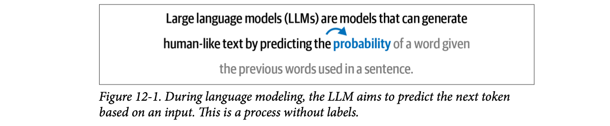
How to read this figure. The black words are what the model has already seen. The blue word "probability" is the next token it must guess. The grey words come later and are hidden from it at that moment. The arrow says: from everything before, predict this word. Training repeats this for every position in billions of sentences.
This produces a base model, also called a pretrained or foundation model. Base models are a key artifact of training but are harder for the end user to deal with, which is why the next step matters.
LLMs are more useful if they respond well to instructions and try to follow them. If a person asks the model to write an article, they expect an article, not, for example, a list of other instructions (which is what a base model might produce).
With supervised fine-tuning (SFT) we adapt the base model to follow instructions. The base model's parameters are updated to be more in line with the target task. It is still trained with next-token prediction, but instead of only predicting the next token of some text, it predicts it based on a user input.
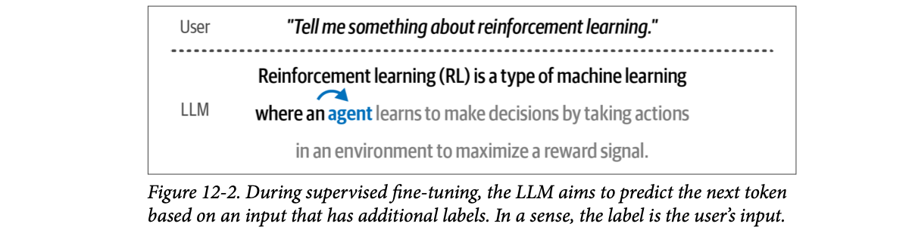
How to read this figure. Same next-word game as Figure 12-1, but now the text has two parts separated by the dashed line: a User turn ("Tell me something about reinforcement learning.") and an LLM turn (the answer). The model predicts the answer's words one by one ("agent" is the current target), always looking at the user's request. That pairing of request and answer is the "additional label".
SFT can also be used for other tasks, such as classification, but it is most often used to go from a base generative model to an instruction (or chat) generative model.
The last step further improves quality and makes the model more aligned with expected behaviour around AI safety or human preferences. This is preference tuning. It is a form of fine-tuning that aligns the output to our preferences, which are defined by the data we give it. Like SFT it can improve the original model, but it has the added benefit of distilling preference of output into training.
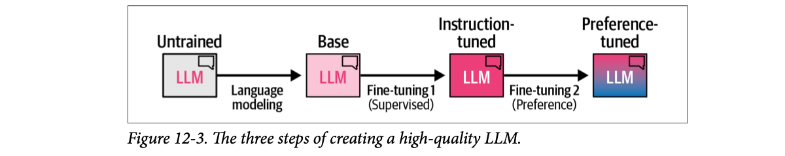
How to read this figure. Follow the arrows left to right: an untrained architecture (random weights, grey) becomes a base model after language modeling (light pink), an instruction-tuned model after supervised fine-tuning (bright pink), and a preference-tuned model after preference fine-tuning (pink-to-blue gradient). The colour getting stronger is the model getting more useful.
In this chapter the authors start from a base model that was already trained on massive datasets, and explore both fine-tuning strategies. For each method: theory first, then practice.
The answers below are illustrative (modelled), written to show the typical behaviour of each stage the book describes.
Training a new cook at a dhaba. Pretraining: they spend years eating and reading about food, so they know what dishes look like. SFT: the owner gives them order slips with the correct plate for each ("1 masala dosa" → this plate), so they learn to serve what was ordered. Preference tuning: regulars taste two versions and say which they like more, so the cook learns how the regulars like it (less oil, more chutney). Where it breaks: a cook can taste their own food; a model cannot check its answer against the world, it only shifts probabilities.
All three steps use gradient descent on the same network. What changes is the data and the signal: raw text and next-token loss (pretraining); request→answer pairs and next-token loss on the answer (SFT); pairs of better/worse answers and a "prefer this one" signal (preference tuning). The architecture stays the same; only the weights move.
Prompt "What is 1 + 1?". Base model: the most likely continuation of a line like that on the internet is often another quiz line, e.g. "2. What is 1 + 1 + 1?" (exactly what Figure 12-5 shows). SFT model: it has seen thousands of "question → answer" pairs, so the most likely continuation is "1 + 1 is 2." Preference-tuned model: among good answers it learned people prefer, say, a direct answer without padding.
"Walk me through how a chat model like ChatGPT is made." Say: "Three stages. Pretraining on huge unlabeled text with next-token prediction gives a base model that completes text. Supervised fine-tuning on instruction→response pairs turns it into an instruction or chat model. Then preference tuning, with RLHF (reinforcement learning from human feedback) via a reward model and PPO, or directly with DPO, aligns it to which answers humans prefer, for helpfulness and safety." Mention that most teams only do the last two, often with LoRA, on top of an open base or chat model.
The purpose of pretraining on large datasets is that the model can reproduce language and its meaning. During that process it learns to complete input phrases.
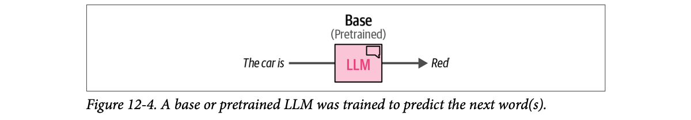
How to read this figure. Input on the left ("The car is"), the base model in the middle, its output on the right ("Red"). It simply picks a likely next word. This is exactly what it was trained to do.
The same behaviour shows that the model was not trained to follow instructions. Given a question, it tries to complete it rather than answer it.
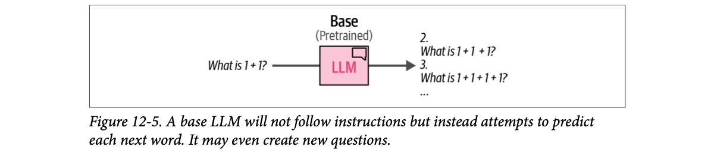
How to read this figure. The input is a question. The output looks like a numbered quiz: "2. What is 1 + 1 + 1? 3. What is 1 + 1 + 1 + 1? …". The model treated your question as item 1 of a list and continued the list. It never answers.
We can take this base model and adapt it to use cases such as following instructions by fine-tuning it.
The autocomplete on your phone keyboard. Type "What is 1 + 1" and it suggests the next word, not the answer. A base LLM is an enormous, very clever autocomplete. Where it breaks: phone autocomplete only looks at a few words; a base LLM looks at thousands of tokens and has absorbed a lot of facts, so with a cleverly written prompt (few-shot examples, Ch.6) you can coax answers out of it even without SFT.
On the web, a line like "What is 1 + 1?" is often followed by more practice questions (worksheets, quizzes), so "more questions" is genuinely a likely continuation. The model is not broken; it is doing next-token prediction perfectly on the wrong objective for a chat product.
"Why can't you just use a base model as a chatbot?" "A base model was trained only to continue text, so it continues your question, maybe with more questions, rather than answering. SFT on instruction–response data in a fixed chat template teaches it that after the user turn comes an assistant answer."
The most common fine-tuning process is full fine-tuning. Like pretraining, it updates all parameters of the model to fit your target task. The main difference is the data: a smaller but labeled dataset, whereas pretraining used a large dataset without labels.
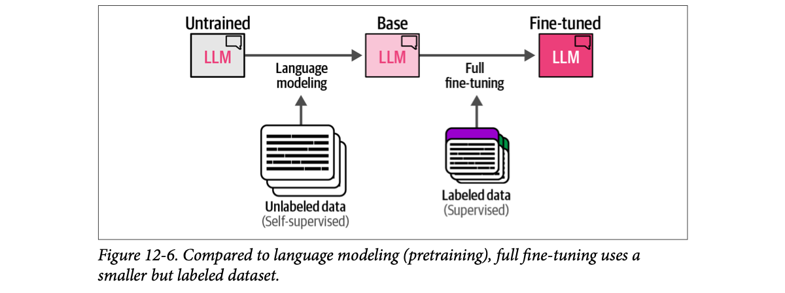
How to read this figure. Two arrows, each fed from below by a stack of documents. The first stack (plain pages, "Unlabeled data, self-supervised") feeds language modeling and is drawn larger. The second stack has coloured tabs ("Labeled data, supervised"): each document carries a label. Both arrows update the whole model; only the data changes.
You can use any labeled data for full fine-tuning, which also makes it a great way to learn domain-specific representations. To make the LLM follow instructions we need question–response data: user queries with matching answers.
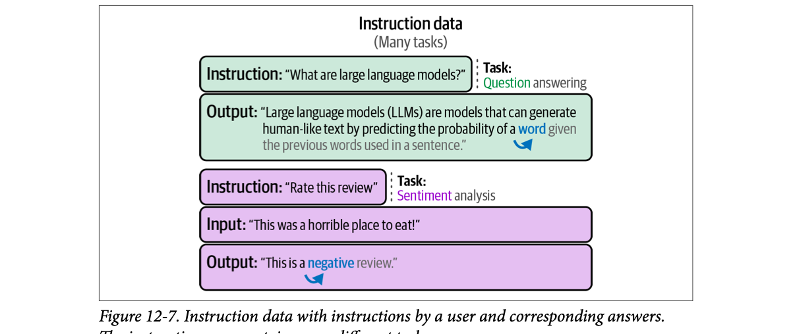
How to read this figure. Two training examples of different tasks in one dataset. Green (question answering): Instruction "What are large language models?" → Output a definition. Purple (sentiment analysis): Instruction "Rate this review", an extra Input "This was a horrible place to eat!", and Output "This is a negative review." The blue arrows under "word" and "negative" mark the tokens being predicted: the loss is on the output.
During full fine-tuning the model takes the input (instructions) and applies next-token prediction on the output (response). So instead of generating new questions, it follows instructions.
Click a token of the response to see what the model is asked to predict at that point. Grey tokens are context only (no loss) in the usual SFT setup.
Beyond the book: libraries can either compute the loss on all tokens or "mask" the prompt so only the response is graded. The book describes the idea (predict the response given the instruction); masking is a common choice.
Pretraining is reading every newspaper in the railway waiting room for years. Full fine-tuning is a coaching class with a question bank and answer key: far fewer pages, but every page says "for this question, write this". Where it breaks: in a coaching class you keep your old knowledge; in full fine-tuning every weight is allowed to change, so a narrow dataset can overwrite general skills (beyond the book: "catastrophic forgetting").
The loss function is the same cross-entropy next-token loss as pretraining. Because the training sequences now always look like "instruction, then answer", the model's weights shift until "answer after instruction" is the most probable pattern. Every parameter gets a gradient, so you need memory for all weights, all gradients and the optimizer's state for each weight.
Modelled numbers: a 1.1B-parameter model in fp32 (4 bytes per number). Weights 4.4 GB. Gradients another 4.4 GB. Adam keeps two extra numbers per weight: 8.8 GB. That is about 17.6 GB before activations, for a "tiny" model. This is the cost plate 5 complains about.
"What data do you need to instruction-tune a model?" "Instruction–response pairs, ideally across many tasks (Q&A, summarisation, classification, extraction), formatted in the model's chat template. The model is trained with next-token prediction on the response given the instruction. For a voice agent you would collect real user turns and the ideal agent reply, including tool-call formats."
Updating all parameters has a large potential to improve performance, but it has several disadvantages:
To solve these problems, attention has turned to parameter-efficient fine-tuning (PEFT): alternatives that fine-tune pretrained models at higher computational efficiency. The next plates cover two PEFT families: adapters and LoRA.
| Full fine-tuning | PEFT (adapters, LoRA) | |
|---|---|---|
| Parameters trained | all | a small set (book: 3.6% for adapters on BERT) |
| Training cost / time | high / slow | much lower / faster |
| Storage per task | full model copy | small add-on file, base model shared |
| Performance | highest potential | close to full (book: within 0.4% on GLUE for adapters) |
You want your flat to suit a new tenant. Full fine-tuning is rebuilding the whole flat. PEFT is changing the curtains, the lights and the furniture: small, cheap, reversible, and the walls stay the same. Where it breaks: if the tenant needs a new kitchen layout (a very different task), curtains won't do; PEFT can underperform when the new task is far from what the base model knows.
Most of the training cost is per trainable parameter: each needs a gradient and optimizer state. If you freeze 97% of the weights, they still run in the forward pass, but you skip storing gradients and optimizer state for them, and you only save the small trained part.
"Why use PEFT?" "Full fine-tuning needs memory for gradients and optimizer state for every parameter and produces a full model copy per task. PEFT trains a tiny fraction, so it fits on one GPU, trains faster, and each task is a small file you can swap on a shared base model, with quality usually close to full fine-tuning."
Adapters are a core component of many PEFT techniques. The idea: add a set of extra modular components inside the Transformer that can be fine-tuned for a specific task without fine-tuning all the model weights. This saves a lot of time and compute.
Adapters come from the paper "Parameter-efficient transfer learning for NLP" (Houlsby et al., 2019). It showed that fine-tuning 3.6% of the parameters of BERT for a task can give performance comparable to fine-tuning all weights. On the GLUE benchmark the authors got within 0.4% of full fine-tuning.
Inside a single Transformer block, the paper places adapters after the attention layer and after the feedforward neural network:
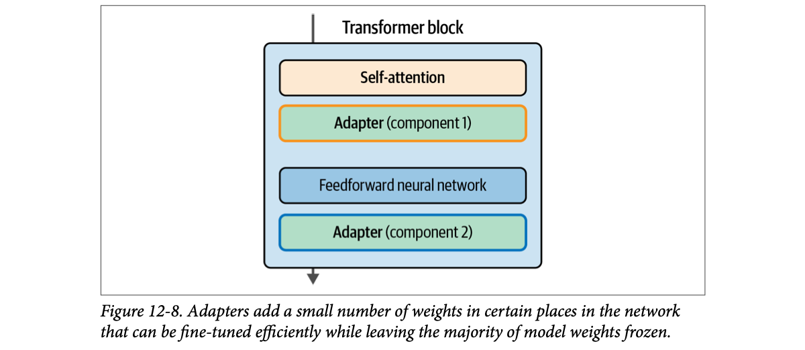
How to read this figure. Data flows top to bottom through one block. The original layers (self-attention in beige, feedforward in blue) are frozen. The two green boxes are the new adapter components, placed right after each original layer. Only the green boxes are trained.
Changing only one block is not enough, so these components are part of every block in the model:
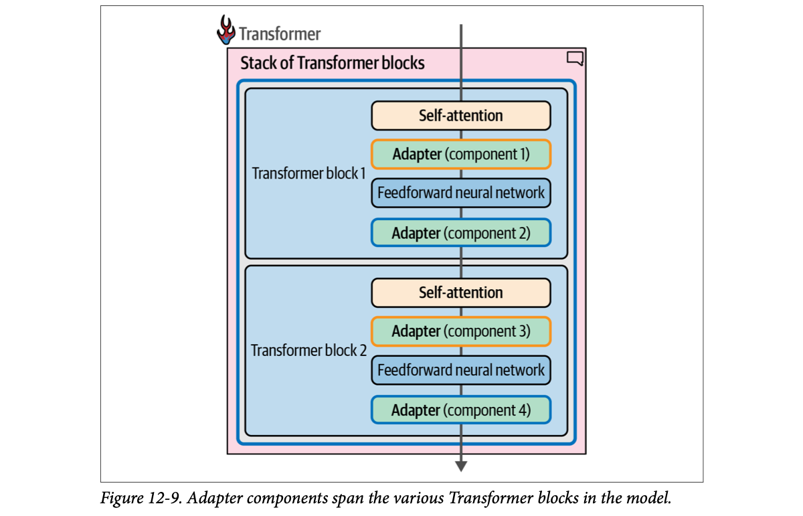
How to read this figure. Two stacked blocks (a real model has dozens). The adapter components are numbered 1, 2 in block 1 and 3, 4 in block 2. The arrow runs through all of them: every token passes every adapter.
Seeing all the components across the model lets us think of an individual adapter as the collection of these components across all blocks. Adapter 1 could specialise in, say, medical text classification, while Adapter 2 specialises in named-entity recognition (NER). The book gives a link where specialised adapters can be downloaded: https://oreil.ly/XraXg.
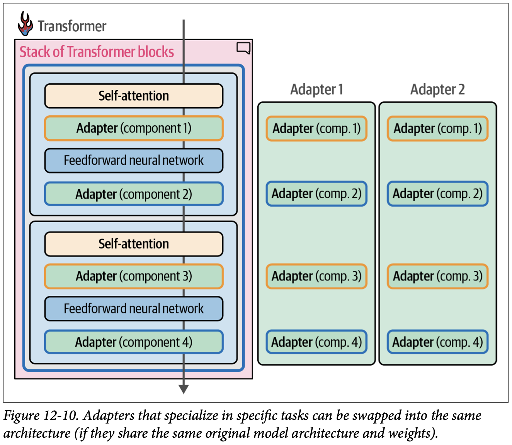
How to read this figure. The left is the shared model: a stack of two Transformer blocks. Inside each block, an adapter component sits after self-attention and another after the feedforward network, so the stack has four adapter slots (components 1 to 4, outlined orange after attention, blue after the feedforward layer). Each green column on the right is one complete adapter: a set of four components that fit those slots exactly. Plug in Adapter 1 or Adapter 2 and the same frozen model does a different task. The caption's condition matters: an adapter only fits the same base architecture and weights it was trained on.
The paper "AdapterHub: A framework for adapting transformers" (Pfeiffer et al., 2020) introduced the Adapter Hub as a central repository for sharing adapters. Many early adapters focused on BERT architectures. More recently the idea has been applied to text generation Transformers, for example in "LLaMA-Adapter: Efficient fine-tuning of language models with zero-init attention" (Zhang et al., 2023).
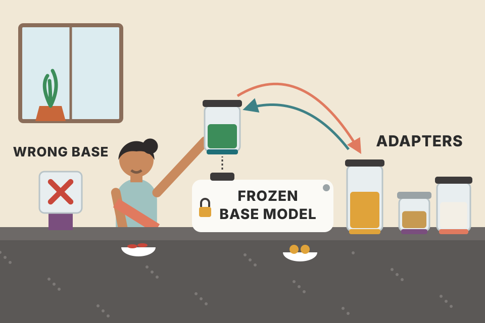
A mixer-grinder with interchangeable jars. The motor (the frozen base model) is the expensive part and never changes. The jars (adapters) are cheap: one for chutney, one for dry masala, one for juice. Swap the jar, get a different job. Where it breaks: jars from another brand won't fit your motor; an adapter only works on the exact base model it was trained for.
Beyond the book: in the Houlsby design, each adapter is a tiny bottleneck network (project down to a small size, non-linearity, project back up) with a residual connection, initialised close to "do nothing". So at the start the model behaves exactly like the base model, and training only learns a small correction after each layer.
Book number: 3.6% of BERT's parameters. BERT-base has about 110 million parameters (beyond the book), so 3.6% is about 4 million trainable numbers, and the result was within 0.4% of full fine-tuning on GLUE. Ten tasks = one 110M base + ten 4M adapters, instead of ten 110M copies.
"What's the difference between adapters and LoRA?" "Adapters add new small layers in series inside each block, so they add a little inference latency. LoRA adds a low-rank update in parallel to existing weight matrices, which can be merged back into the weights after training, so inference costs nothing extra." (The latency point is beyond the book.)
As an alternative to adapters, low-rank adaptation (LoRA) was introduced (Hu et al., 2021). At the time of writing it is a widely used and effective PEFT technique. Like adapters, it only updates a small set of parameters. But instead of adding layers, it creates a small subset of the base model to fine-tune.
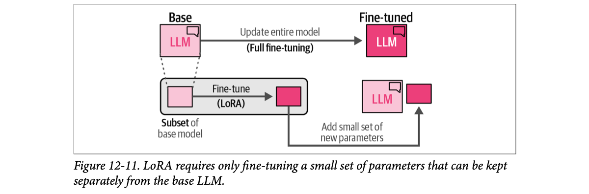
How to read this figure. Top row: full fine-tuning turns the whole base LLM into a new fine-tuned LLM. Bottom row: LoRA zooms into a subset of the base model (the dotted lines), fine-tunes a small piece, and then keeps that piece separately next to the original LLM ("add small set of new parameters"). The base stays light pink: unchanged.
Like adapters, this subset makes fine-tuning much quicker, because only a small part is updated. The subset is made by approximating the large matrices of the original LLM with smaller matrices, and fine-tuning those instead. Take a 10 × 10 matrix:
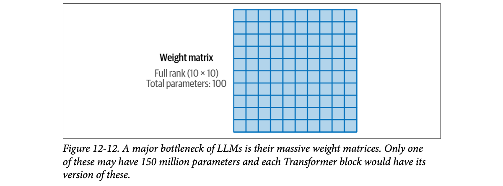
How to read this figure. A toy weight matrix: 10 rows × 10 columns = 100 numbers, all independent ("full rank"). Real LLM matrices look the same but with thousands of rows and columns; the caption says a single one can hold 150 million parameters, and every block has its own.
We can find two smaller matrices which, multiplied together, rebuild a 10 × 10 matrix. Instead of 100 weights (10 × 10) we now have 20 (10 + 10).
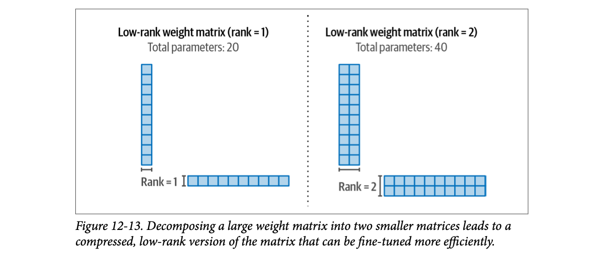
How to read this figure. Left: rank 1, one column of 10 and one row of 10 = 20 parameters. Their product (column × row) is a full 10 × 10 grid. Right: rank 2, a 10 × 2 and a 2 × 10 = 40 parameters. The rank is the thin side: higher rank = more parameters = a richer matrix you can represent.
During training, only these smaller matrices are updated, instead of the full weight changes. The updated change matrices (the small ones) are then combined with the full, frozen weights:
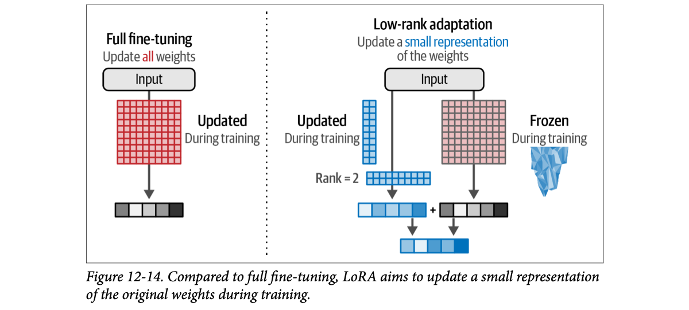
How to read this figure. Left: full fine-tuning, the whole red matrix is "Updated during training". Right: the input goes down two paths. Path one goes through the big original matrix, which is Frozen (the iceberg). Path two goes through the two thin blue matrices (rank = 2), which are Updated. The two output vectors are added (the "+") to give the final output.
You might suspect performance would drop, and you'd be right. So when does the trade-off make sense? Papers like "Intrinsic dimensionality explains the effectiveness of language model fine-tuning" (Aghajanyan et al., 2020) show that language models "have a very low intrinsic dimension". That means small ranks can approximate even the massive matrices of an LLM.
The book's example: a 175B model like GPT-3 has a 12,288 × 12,288 weight matrix inside each of its 96 Transformer blocks. That's 150 million parameters. Adapting that matrix at rank 8 "would only require two 12,288 × 2 matrices resulting in 197K parameters per block." These are major savings in speed, storage and compute, as the LoRA paper explains.
Unsure / book inconsistency: rank 8 means two 12,288 × 8 matrices: 2 × 12,288 × 8 = 196,608 ≈ 197K, which matches the book's 197K. Two 12,288 × 2 matrices would be 49,152. So the "× 2" in the text looks like a typo; the 197K figure is right for rank 8.
This smaller representation is flexible: you can choose which parts of the base model to fine-tune. For example, you could fine-tune only the Query and Value weight matrices in each Transformer layer.
The counter uses square d × d matrices like the book's example. Real models have some rectangular matrices (e.g. MLP up/down projections); the TinyLlama preset is a rough modelled approximation (hidden size 2048, 22 layers; beyond the book).
A big city's traffic plan is a 12,288 × 12,288 table of "how much traffic goes from junction i to junction j". To adjust for a new metro line you don't rewrite every cell. You note a few patterns, such as "everything near station X goes up", which you can write as a short list per junction (a thin column) times a short list per destination (a thin row). Where it breaks: if the change truly has many independent patterns, a rank-8 summary misses some; that's the small quality drop the book admits.
Write the fine-tuned weight as W' = W + ΔW. LoRA forces ΔW = B · A with B of size d × r and A of size r × d, r much smaller than d. The forward pass becomes h = W·x + B·(A·x): the frozen path plus the thin path, added (Figure 12-14). Only A and B get gradients. "Low intrinsic dimension" means the useful change for a new task lives in a small subspace, so a small r captures most of it. Beyond the book: B usually starts at zero so training starts from exactly the base model, and the update is scaled by lora_alpha / r (plate 12).
GPT-3 numbers from the book: full matrix 12,288² = 150,994,944 ≈ 150M per block. LoRA at r = 8: 2 × 12,288 × 8 = 196,608 ≈ 197K. Ratio: 197K / 151M ≈ 0.13%. Over 96 blocks: ~18.9M trainable instead of ~14.5B (for that one matrix type). Toy: 10 × 10 = 100, rank 1 = 20, rank 2 = 40 (Figure 12-13).
"Explain LoRA in two minutes." "Freeze the pretrained weight W. Learn its update as a product of two thin matrices B (d×r) and A (r×d) with rank r like 8 to 64. The forward pass adds B·A·x to W·x. You train well under 1% of the parameters, so memory and checkpoint size drop massively, and after training you can merge B·A into W so inference has no extra cost. It works because fine-tuning updates have low intrinsic dimension." Tie-in: per-customer LoRA adapters on one shared base model are a common way to serve many fine-tunes from one LLM gateway (beyond the book).
r, lora_alpha and target_modules in code.LoRA can be made even more efficient by reducing the memory of the model's original weights before projecting them into smaller matrices. LLM weights are numbers with a given precision, expressed by the number of bits: float64, float32, and so on. Fewer bits → less accurate value, but also lower memory.
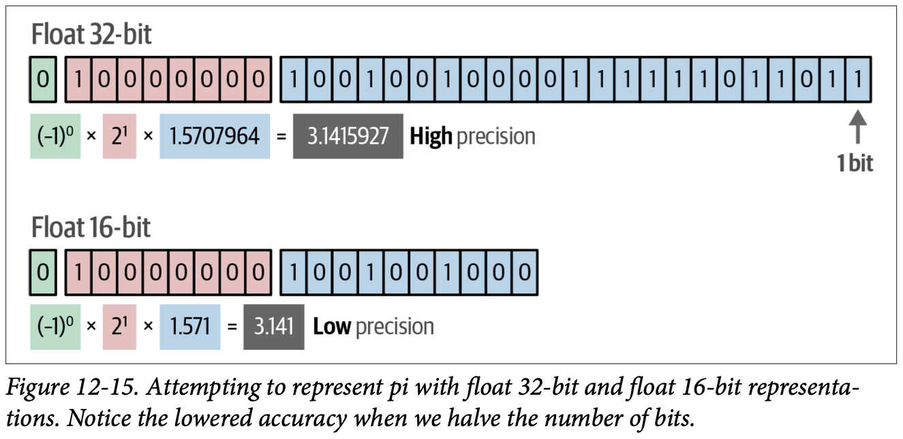
How to read this figure. Each box is one bit. Green = sign (0 = positive). Red = exponent (here it encodes 2¹). Blue = mantissa, the digits. Value = (−1)^sign × 2^exponent × mantissa. With 32 bits, π comes out as 3.1415927 ("high precision"). With 16 bits the blue part is much shorter, so π is only 3.141 ("low precision").
Bit layouts computed in your browser (IEEE-754 float32 and float16). Beyond the book: the figure's bit boxes are schematic. Its fp16 row draws an 8-bit exponent and a 10-bit mantissa, which is neither format: real IEEE fp16 is 1 + 5 + 10 bits, and bfloat16 (8-bit exponent like fp32) has only 7 mantissa bits.
With quantization the aim is to lower the number of bits while still representing the original values accurately. But if you directly map high-precision values to lower-precision ones, several different high-precision values can end up as the same low-precision value.
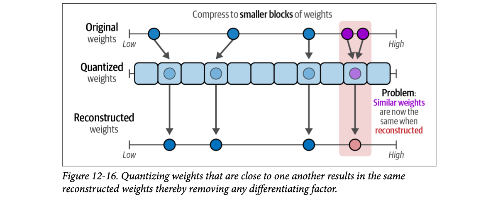
How to read this figure. Top line: original weights from low to high. Middle: one row of quantized bins (few levels, because few bits). Bottom: reconstructed weights after converting back. Blue weights each get their own bin and survive. The two purple weights are close together, fall into the same bin, and come back as one red dot: the difference between them is gone.
The authors of QLoRA (a quantized version of LoRA; Dettmers et al., 2023) found a way to go from many bits to few and back without moving too far from the original weights. They used blockwise quantization: map certain blocks of high-precision values to low-precision values. Instead of one direct mapping, additional blocks are created so that similar weights can be quantized separately.
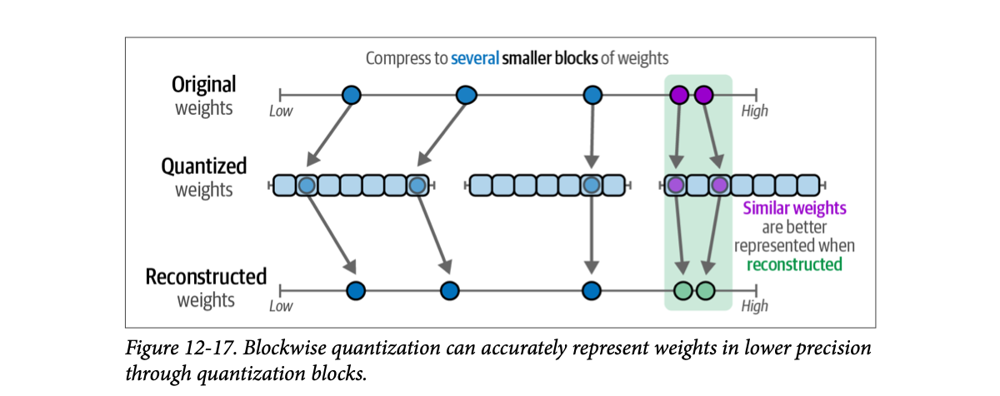
How to read this figure. Same weights as Figure 12-16, but now there are several smaller blocks of bins, each covering only a part of the range. Inside the right-hand block the bins are fine enough that the two purple weights fall into different bins, so after reconstruction they are two green dots: "similar weights are better represented".
A nice property of neural networks: their weights are generally normally distributed between −1 and 1. So we can bin the weights to lower bits based on their relative density: more, narrower bins where weights are crowded, fewer, wider bins at the tails. The mapping accounts for how often each value occurs, which is more efficient and also reduces issues with outliers.
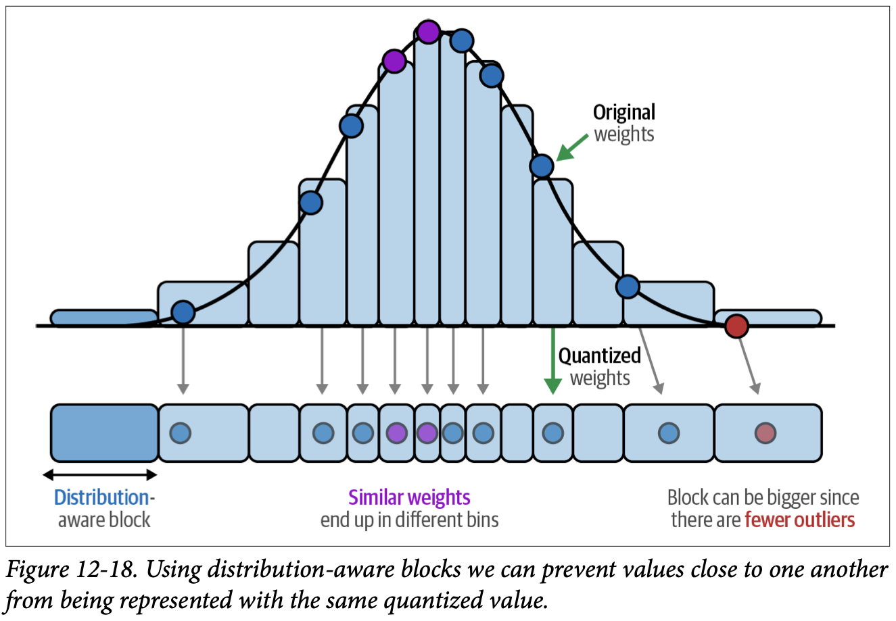
How to read this figure. The bell curve is how weights are spread. The bars under it are the quantization bins: narrow near the peak (many weights, so they need fine resolution) and wide in the tails. Bottom row: the two purple weights near the peak now land in different bins. On the far right, a rare outlier (red) sits in a wide bin; "block can be bigger since there are fewer outliers". On the left, "distribution-aware block" names the idea.
Combined with blockwise quantization, this normalisation lets low-precision values represent high-precision ones accurately, with only a small decrease in LLM performance. So we can go from a 16-bit float representation to a measly 4-bit normalized float (NF4). Four bits significantly reduce memory during training. Quantization is also helpful for inference: quantized LLMs are smaller and need less VRAM (video RAM, the GPU's memory).
More refined optimisations exist, such as double quantization and paged optimizers; the book refers you to the QLoRA paper, and to a "highly visual guide to quantization" blog post.
Modelled: 16 weights drawn from a normal distribution, plus one outlier and a deliberately close pair. "Distribution-aware" here places levels at normal quantiles, the spirit of NF4; it is a teaching approximation, not the exact NF4 table. With only 17 weights, the big win you'll see is naive → blocks (errors drop about 3×); the distribution-aware gain shows up over millions of normally distributed weights.
Recording exam marks out of 100 with only 8 grade letters. Naive: A = 88–100, B = 76–87… Two students with 91 and 93 both get "A" and look identical. Blockwise: each section of the class gets its own grading scale, so the top section's scale is fine enough to tell 91 from 93. Distribution-aware: since most students score 55–75, you put most of your 8 letters in that band and only one letter each for the rare 0–30 and 95–100. Where it breaks: marks are integers; weights are real numbers, and you must store each block's scale (that's the extra memory double quantization then squeezes).
With b bits you get 2^b levels. A single global scale is set by the largest absolute value, so one outlier stretches the grid and wastes levels. Blocks of, say, 64 weights each get their own scale (beyond the book: QLoRA uses block size 64), so an outlier only hurts its own block. NF4 then places the 16 levels where a normal distribution's probability mass is, so each level is used about equally often. In QLoRA the frozen base is stored in NF4, but computation runs in 16-bit (bnb_4bit_compute_dtype), and the LoRA matrices are trained in 16-bit.
Memory per parameter (modelled): fp32 4 bytes, fp16 2 bytes, 4-bit 0.5 bytes. A 7B model's weights: 28 GB (fp32), 14 GB (fp16), ~3.5 GB (4-bit) plus a little for block scales. The book's TinyLlama: ~4 GB unquantized → ~1 GB in 4-bit (plate 11).
"What is QLoRA and why does it work?" "QLoRA freezes the base model in 4-bit NormalFloat, using blockwise quantization so outliers don't ruin precision and levels matched to the roughly normal weight distribution, plus double quantization of the block scales and paged optimizers to survive memory spikes. LoRA adapters are trained in 16-bit on top, with weights de-quantized on the fly for each matmul. You get near-16-bit fine-tuning quality on a fraction of the GPU memory."
BitsAndBytesConfig that turns this on.Now the theory goes into practice. The authors fine-tune TinyLlama, a completely open source, smaller version of Llama, to follow instructions using the QLoRA procedure. Treat it as a base (pretrained) model: trained with language modeling, but unable to follow instructions yet.
Like a recipe card at a cooking class: get ingredients ready in the right format (template the data), shrink the pot so it fits your small stove (quantize to 4 bits), pick which spices you're allowed to adjust (LoRA config), set the flame and timer (training config), cook (train), then plate it up (merge weights). Where it breaks: a recipe gives exact times; the book stresses that hyperparameters need experimenting.
The Hugging Face stack splits the job into libraries: datasets (data), transformers (model, tokenizer, TrainingArguments), bitsandbytes (4-bit quantization), peft (LoRA) and trl (SFTTrainer, DPOTrainer). Each plate below sets up one of them.
To have the LLM follow instructions, the instruction data must follow a chat template. The template separates what the LLM generated from what the user generated.
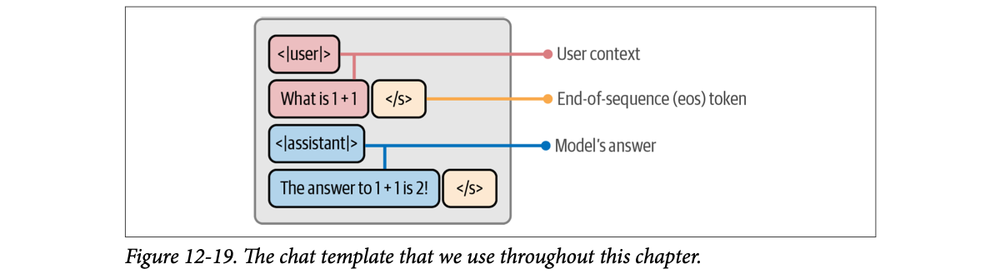
then 'What is 1 + 1' then , labelled user context and end-of-sequence (eos) token; then <|assistant|> then 'The answer to 1 + 1 is 2!' then , labelled model's answer" loading="lazy">How to read this figure. Red: the <|user|> tag and the user's text ("User context"). Orange: </s>, the end-of-sequence (eos) token, closes each turn. Blue: the <|assistant|> tag and the model's answer. Learning this layout is how the model learns "after the user turn ends, I answer, then I stop".
They chose this template because the chat version of TinyLlama uses the same format. The data is a small subset of the UltraChat dataset (Ding et al., 2023), specifically a filtered version that has almost 200k conversations between a user and an LLM.
A function format_prompt makes every conversation follow the template:
from transformers import AutoTokenizer
from datasets import load_dataset
# Load a tokenizer to use its chat template
template_tokenizer = AutoTokenizer.from_pretrained(
"TinyLlama/TinyLlama-1.1BChat-v1.0"
)
def format_prompt(example):
"""Format the prompt to using the <|user|> template TinyLLama is using"""
chat = example["messages"]
prompt = template_tokenizer.apply_chat_template(chat, tokenize=False)
return {"text": prompt}
# Load and format the data using the template TinyLLama is using
dataset = (
load_dataset("HuggingFaceH4/ultrachat_200k", split="test_sft")
.shuffle(seed=42)
.select(range(3_000))
)
dataset = dataset.map(format_prompt)AutoTokenizer.from_pretrained(...) loads the chat model's tokenizer only for its built-in chat template. (The book prints the id as TinyLlama-1.1BChat-v1.0; beyond the book, the Hugging Face Hub id is TinyLlama/TinyLlama-1.1B-Chat-v1.0 with a hyphen.)example["messages"] is a list of turns like {"role": "user", "content": ...}. apply_chat_template(chat, tokenize=False) turns it into one string with the <|user|>/<|assistant|> tags and </s> tokens. tokenize=False returns text, not token ids.{"text": prompt}, a new column named text that the trainer will read later.load_dataset("HuggingFaceH4/ultrachat_200k", split="test_sft") loads the SFT split; .shuffle(seed=42) mixes it reproducibly; .select(range(3_000)) keeps 3,000 documents to cut training time. You can raise this to get more accurate results.dataset.map(format_prompt) runs the function on every row.Printing dataset["text"][2576] shows one formatted conversation: a user asks to continue the joke "Knock, knock. Who's there? Hike." and the assistant replies "…Hike who? Hike up your pants, it's cold outside!"; the user then asks for another, and the assistant gives "…Hike your way over here and let's go for a walk!". Every turn starts with its tag and ends with </s>. Multi-turn conversations simply repeat the pattern.
Colours: user tag, assistant tag, end-of-sequence. TinyLlama-chat's real template puts a newline after each tag, as the book's printed example shows.
A railway reservation chart: every line has the same columns (coach, berth, name, age) so the TC can read any chart instantly. A chat template is that fixed layout for conversations. Where it breaks: a TC can read a messy chart; a model trained on one template gets confused if you serve it with a different one at inference.
The special strings become special tokens. During training, the model sees thousands of times that <|assistant|> is followed by a helpful answer and then </s>. At inference you build the prompt up to <|assistant|>\n and the model "knows" it is its turn, and it learns to emit </s> so generation stops.
"Your fine-tuned model rambles and never stops, why?" "Usually a template or eos mismatch: training examples lacked the end-of-sequence token after the assistant turn, or inference uses a different chat template than training, or the pad token equals eos and got masked out. Always build prompts with the tokenizer's own apply_chat_template on both sides."
<|system|> turn.With the data ready, the model is loaded. This is where the Q in QLoRA (quantization) happens. The bitsandbytes package compresses the pretrained model to a 4-bit representation. In BitsAndBytesConfig you define the scheme. The authors follow the original QLoRA paper: load in 4-bit (load_in_4bit), with a normalized float type (bnb_4bit_quant_type) and double quantization (bnb_4bit_use_double_quant).
import torch
from transformers import AutoModelForCausalLM, AutoTokenizer, BitsAndBytesConfig
model_name = "TinyLlama/TinyLlama-1.1B-intermediate-step-1431k-3T"
# 4-bit quantization configuration - Q in QLoRA
bnb_config = BitsAndBytesConfig(
load_in_4bit=True, # Use 4-bit precision model loading
bnb_4bit_quant_type="nf4", # Quantization type
bnb_4bit_compute_dtype="float16", # Compute dtype
bnb_4bit_use_double_quant=True, # Apply nested quantization
)
# Load the model to train on the GPU
model = AutoModelForCausalLM.from_pretrained(
model_name,
device_map="auto",
# Leave this out for regular SFT
quantization_config=bnb_config,
)
model.config.use_cache = False
model.config.pretraining_tp = 1
# Load LLaMA tokenizer
tokenizer = AutoTokenizer.from_pretrained(model_name, trust_remote_code=True)
tokenizer.pad_token = "<PAD>"
tokenizer.padding_side = "left"model_name: the base TinyLlama checkpoint ("intermediate step 1431k, 3T" tokens), not the chat one. This is the model we teach.load_in_4bit=True: store weights in 4 bits. bnb_4bit_quant_type="nf4": use the 4-bit NormalFloat from plate 8. bnb_4bit_compute_dtype="float16": de-quantize to 16-bit for the actual math. bnb_4bit_use_double_quant=True: also quantize the per-block scale numbers ("nested quantization").device_map="auto": place layers on the available GPU(s) automatically. The comment says: leave out quantization_config for regular SFT.use_cache = False: the KV (key-value) cache only speeds up generation; it is not needed during training (and clashes with gradient checkpointing; beyond the book). pretraining_tp = 1: a Llama setting for tensor-parallel behaviour from pretraining; 1 means the standard computation (beyond the book).pad_token = "<PAD>" sets a padding token (Llama has none by default), and padding_side = "left" pads on the left.This shrinks the model while keeping most of the original weights' precision. Loading now uses ~1 GB VRAM instead of ~4 GB without quantization. During fine-tuning more VRAM is needed, so usage does not stay at ~1 GB.
Modelled: weights only (params × bytes per param). The book's "~4 GB" matches 1.1B × 4 bytes (fp32) and "~1 GB" ≈ 4-bit plus overhead (some layers such as embeddings often stay in 16-bit). Training also needs activations, LoRA gradients and optimizer state.
Shipping a sofa in a flat-pack box: it takes a quarter of the van space, and you assemble each part only when you need to sit on it. 4-bit storage is the flat-pack; compute_dtype=float16 is assembling a piece for each calculation. Where it breaks: a flat-pack sofa is the same sofa; a 4-bit weight is slightly different from the original.
bitsandbytes replaces each nn.Linear with a 4-bit version. Its weights sit in GPU memory as packed 4-bit codes plus a scale per block. For every forward pass it de-quantizes a block to fp16, multiplies, and throws the fp16 copy away. The frozen base never gets gradients, so 4-bit storage is fine; only the LoRA matrices (added in plate 12) train in higher precision.
"How would you fine-tune a 7B model on one 16 GB GPU?" "QLoRA: load the base in 4-bit NF4 with double quantization (about 4 GB for weights), add LoRA adapters, use gradient checkpointing, a small per-device batch with gradient accumulation, and a paged 32-bit AdamW optimizer. Full fine-tuning in fp16 would need well over 100 GB once gradients and Adam states are counted."
Next the LoRA configuration is defined with the peft library. These are the hyperparameters of the fine-tuning process:
from peft import LoraConfig, prepare_model_for_kbit_training, get_peft_model
# Prepare LoRA Configuration
peft_config = LoraConfig(
lora_alpha=32, # LoRA Scaling
lora_dropout=0.1, # Dropout for LoRA Layers
r=64, # Rank
bias="none",
task_type="CAUSAL_LM",
target_modules= # Layers to target
["k_proj", "gate_proj", "v_proj", "up_proj", "q_proj", "o_proj",
"down_proj"]
)
# Prepare model for training
model = prepare_model_for_kbit_training(model)
model = get_peft_model(model, peft_config)The parameters worth knowing:
r: the rank of the compressed matrices (Figure 12-13). Higher r → bigger matrices → less compression → more representative power. Values typically range between 4 and 64.lora_alpha: controls how much change is added to the original weights. It balances the original model's knowledge with the new task's. Rule of thumb: choose a value twice the size of r.target_modules: which layers to target. LoRA can skip some layers, such as specific projection layers. Skipping layers speeds up training but reduces performance, and vice versa.Unsure / book inconsistency: the rule of thumb says lora_alpha ≈ 2 × r, but the book's own code uses lora_alpha=32 with r=64 (alpha = r / 2). Both appear in the book; there's no single correct value, and the authors stress experimenting.
The other lines: lora_dropout=0.1 randomly drops 10% of the LoRA path's inputs during training (regularisation). bias="none": don't train bias terms. task_type="CAUSAL_LM": next-token generation model. The seven target_modules names are Llama's attention projections (q_proj, k_proj, v_proj, o_proj for query, key, value, output) and MLP (multi-layer perceptron) projections (gate_proj, up_proj, down_proj): every linear layer in each block. prepare_model_for_kbit_training readies a 4-bit model for training (beyond the book: casts some layers such as norms to fp32 and enables input gradients for checkpointing). get_peft_model wraps the model and inserts the LoRA matrices.
Playing with these parameters is a worthwhile experiment to build intuition. The book recommends the tips on LoRA fine-tuning in Sebastian Raschka's Ahead of AI newsletter.
To do full fine-tuning, remove the quantization_config parameter when loading the model and skip creating peft_config. That turns "instruction tuning with QLoRA" into "full instruction tuning".
Modelled for TinyLlama-1.1B shapes (beyond the book: hidden 2048, MLP 5632, 22 layers, grouped-query attention with k/v projections of width 256). Scale = alpha / r is the standard LoRA multiplier on B·A (beyond the book).
r is how many knobs you give the sound engineer; lora_alpha is how far the master volume on those knobs goes; target_modules is which instruments get knobs at all. Where it breaks: sound knobs act independently; LoRA's rank-r directions are learned together and are not individually meaningful.
For each targeted linear layer W (d_out × d_in), PEFT adds A (r × d_in, random init) and B (d_out × r, zero init), and computes W·x + (alpha / r) · B·A·x (beyond the book). So alpha / r sets the strength of the update; with alpha = 32, r = 64 that factor is 0.5. Targeting all seven projections touches every matrix in the block, which usually gives the best quality per trainable parameter.
"How do you choose LoRA rank?" "Start small, 8–16, for narrow tasks such as format or style; go to 32–64 for harder domain shifts. Set alpha relative to r, a common heuristic is 2×r, and target all linear projections, not just q and v, for the best quality. Then tune on a held-out eval: if higher r doesn't help, the task is low-rank enough."
Last, the training parameters are configured, as in Chapter 11:
from transformers import TrainingArguments
output_dir = "./results"
# Training arguments
training_arguments = TrainingArguments(
output_dir=output_dir,
per_device_train_batch_size=2,
gradient_accumulation_steps=4,
optim="paged_adamw_32bit",
learning_rate=2e-4,
lr_scheduler_type="cosine",
num_train_epochs=1,
logging_steps=10,
fp16=True,
gradient_checkpointing=True
)The parameters the book highlights:
num_train_epochs: total number of training rounds over the data. Higher values tend to degrade performance, so keep it low (here 1).learning_rate: the step size of each weight update. The QLoRA authors found higher learning rates work better for larger models (>33B parameters).lr_scheduler_type: a cosine-based scheduler that changes the learning rate during training. It linearly increases the rate from zero until it reaches the set value, then decays it following a cosine curve.optim: the paged optimizers from the original QLoRA paper.The other lines: per_device_train_batch_size=2 and gradient_accumulation_steps=4 mean gradients from 4 mini-batches of 2 are summed before each update, an effective batch of 8. logging_steps=10 prints the loss every 10 steps. fp16=True trains in 16-bit mixed precision. gradient_checkpointing=True saves memory by recomputing activations in the backward pass instead of storing them.
Optimising these is hard and there are no set guidelines: it takes experimentation for each dataset, model size and target task.
This section does instruction tuning on a base model, but you can also use QLoRA to fine-tune an instruction (chat) model, for example to make it generate specific SQL code or JSON output in a specific format. As long as you have appropriate query–response data, QLoRA is a great way to nudge an existing chat model toward your use case.
Modelled: 3,000 examples ÷ effective batch 8 = 375 steps for one epoch. Beyond the book: in Hugging Face the warmup length comes from warmup_ratio or warmup_steps (default 0). The SFT config above sets neither, so there it would start straight at the peak and only decay; the DPO config (plate 31) adds warmup_ratio=0.1.
Driving a new car out of the showroom: you ease onto the road slowly (warmup), drive at a good speed on the highway, and slow down smoothly as you approach home (cosine decay) so you park precisely. Where it breaks: you can see the road; the optimizer only sees the loss, so it can't tell when it's "home".
Early on, Adam's running averages are noisy and the LoRA weights are at their initial values, so a big step can push them somewhere bad; warmup avoids that. Late in training, smaller steps let the weights settle into a minimum instead of bouncing around it. Paged optimizers move optimizer state to CPU memory when the GPU runs short, so a long sequence doesn't crash the run with out-of-memory (beyond the book detail; the book points to the QLoRA paper).
3,000 examples, batch 2 × accumulation 4 = 8 per update → 375 updates for 1 epoch. Loss is logged every 10 steps → about 37 log lines. With cosine decay and no warmup, the lr at step 187 (halfway) is 2e-4 × 0.5 × (1 + cos(π/2)) = 1e-4.
"Your GPU fits batch size 2 but you want 16, what do you do?" "Gradient accumulation: run 8 forward/backward passes of 2, sum the gradients, then step once. It's mathematically the same update as batch 16 (except for batch-norm-style layers, which LLMs don't use) at the cost of more time. Combine with gradient checkpointing and mixed precision to save memory."
TrainingArguments for BERT.With models and parameters ready, fine-tuning starts. Load SFTTrainer and run trainer.train():
from trl import SFTTrainer
# Set supervised fine-tuning parameters
trainer = SFTTrainer(
model=model,
train_dataset=dataset,
dataset_text_field="text",
tokenizer=tokenizer,
args=training_arguments,
max_seq_length=512,
# Leave this out for regular SFT
peft_config=peft_config,
)
# Train model
trainer.train()
# Save QLoRA weights
trainer.model.save_pretrained("TinyLlama-1.1B-qlora")SFTTrainer (from the trl library) is a Trainer specialised for supervised fine-tuning of causal LMs.dataset_text_field="text": read the column that format_prompt created (plate 10).max_seq_length=512: cut sequences to 512 tokens to bound memory.peft_config=peft_config: train with LoRA. The comment: leave this out for regular SFT.save_pretrained("TinyLlama-1.1B-qlora") saves only the QLoRA (adapter) weights, a small folder, not the whole model.During training the loss is printed every 10 steps (logging_steps). On the free Google Colab GPU (a Tesla T4 at the time of writing), training might take up to an hour. "A good time to take a break!"
Modelled loss curve only, to show what "loss printed every 10 steps" looks like; not the book's output.
Practising cricket shots in the nets with a bowling machine: every ball is one batch, the coach notes your score every 10 balls, and the session ends when the bucket (one epoch) is empty. Where it breaks: a falling training loss means you're hitting the machine's balls well, not that you'll score in a match; that's what evaluation (plate 16) is for.
For each batch, SFTTrainer tokenizes the text, runs the 4-bit base plus LoRA forward, computes next-token cross-entropy, back-propagates only into the LoRA matrices, and steps the paged AdamW optimizer every 4 batches. The saved folder holds an adapter_config.json and the adapter weights (beyond the book), often just tens of MB.
"How do you know your fine-tune is working?" "Training loss should drop smoothly; also track eval loss on held-out data to catch overfitting, and, most importantly, run task-specific evals and side-by-side samples against the base model, since loss alone doesn't tell you about helpfulness or format adherence."
After training the QLoRA weights, they must be combined with the original weights to be used. The model is reloaded in 16 bits (not the quantized 4 bits) for merging. The tokenizer wasn't updated during training, but saving it in the same folder makes access easier.
from peft import AutoPeftModelForCausalLM
model = AutoPeftModelForCausalLM.from_pretrained(
"TinyLlama-1.1B-qlora",
low_cpu_mem_usage=True,
device_map="auto",
)
# Merge LoRA and base model
merged_model = model.merge_and_unload()AutoPeftModelForCausalLM.from_pretrained("TinyLlama-1.1B-qlora") reads the adapter folder, finds which base model it belongs to, loads that base (here without a quantization config, so in 16-bit) and attaches the adapter.low_cpu_mem_usage=True loads weights without making extra copies in RAM.merge_and_unload() adds the LoRA update into each base weight (W ← W + scale·B·A) and removes the LoRA wrappers, giving a plain Transformers model.Now use it with the same prompt template:
from transformers import pipeline
# Use our predefined prompt template
prompt = """<|user|>
Tell me something about Large Language Models.</s>
<|assistant|>
"""
# Run our instruction-tuned model
pipe = pipeline(task="text-generation", model=merged_model, tokenizer=tokenizer)
print(pipe(prompt)[0]["generated_text"])The output starts: "Large Language Models (LLMs) are artificial intelligence (AI) models that learn language and understand what it means to say things in a particular language. They are trained on huge amounts of text…". The model now closely follows instructions, which the base model couldn't do.
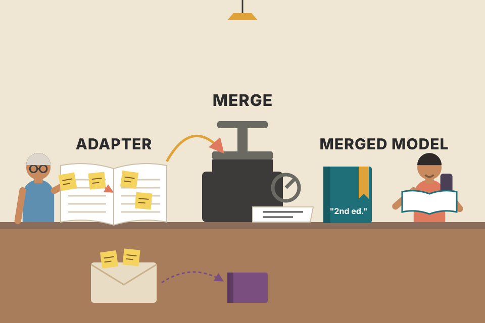
Writing corrections on sticky notes in a textbook (the adapter), then reprinting a new edition with the corrections typed into the page (merging). Readers of the new edition don't need the sticky notes any more. Where it breaks: once reprinted, you can't peel the correction off; keep the adapter file if you want to switch back or swap tasks.
The adapter learned B and A for each targeted layer. Since the forward pass is W·x + s·B·A·x = (W + s·B·A)·x, you can pre-add s·B·A into W once. After that the model is a normal model: same size as the base, no extra matmuls at inference. Merging in 16-bit avoids adding a 16-bit update onto lossy 4-bit weights and re-quantizing (the reason to reload in 16 bits).
"Merge LoRA or keep it separate in production?" "Merge when you serve one fine-tune: zero extra latency and simpler deployment. Keep adapters separate when serving many fine-tunes of the same base: servers like vLLM can batch requests for different LoRA adapters on one base model (beyond the book), which is far cheaper than one GPU per fine-tune."
Evaluating generative models is a significant challenge. They are used for many diverse tasks, so one metric can't judge them all. Unlike specialised models, a generative model's ability to solve maths questions does not guarantee success at coding questions.
At the same time, evaluation is vital, especially in production where consistency matters. Because generative models are probabilistic, they don't necessarily produce consistent outputs, so we need robust evaluation.
The book covers a few common methods but stresses the current lack of golden standards: no one metric is perfect for all use cases.
| Method (plate) | What it measures | Cost | Main weakness (book) |
|---|---|---|---|
| Word-level metrics (17) | overlap with reference / model confidence | cheap | ignore consistency, fluency, creativity, correctness |
| Benchmarks (18) | fixed public task sets | medium–high (hours on strong GPUs) | overfitting, too broad, slow to iterate |
| Leaderboards (19) | many benchmarks together | someone else runs it | overfitting on the leaderboard |
| LLM-as-a-judge (20) | quality of open-ended answers | API calls | (book stresses its advantage: grows with the field) |
| Human evaluation (21) | actual preference | expensive / slow | crowd opinion may not match your use case |
Judging a new hire: a typing test (word-level), a standard aptitude exam (benchmark), the class rank across many exams (leaderboard), a senior engineer reviewing their code (LLM-as-a-judge), and a month working with your team (human evaluation). Each tells you something; none tells you everything. Where it breaks: people are fairly consistent day to day; the same model can give different answers to the same prompt.
Classification has one right label, so accuracy works. Generation has many acceptable outputs, and "good" depends on the task (correct maths, compiling code, a short summary, a polite tone). Sampling also makes each run differ, so you measure a distribution, not a single answer.
"How would you evaluate an LLM feature before launch?" "Build a task-specific eval set from real traffic with expected behaviours; use automatic checks where possible (exact match, JSON schema, unit tests for code), LLM-as-a-judge with a rubric for open-ended quality, and a human review of a sample. Run several samples per prompt because outputs vary, and track the metrics on every model or prompt change." For a voice agent: task completion, tool-call correctness, and latency alongside answer quality.
One common category is word-level evaluation. These classic techniques compare a reference dataset with the generated tokens at a token (set) level. Common ones: perplexity, ROUGE, BLEU and BERTScore.
Perplexity measures how well a language model predicts a text. Given input text, the model predicts how likely the next token is. We assume a model is better if it gives the actual next token a high probability: the model should not be "perplexed" by a well-written document.
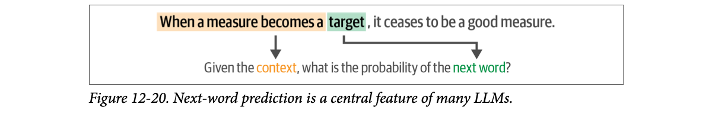
How to read this figure. The orange part, "When a measure becomes a", is the context. The green word "target" is the next word. Perplexity asks: how much probability did the model give to "target"? High probability = low perplexity = good. (The sentence is Goodhart's law, which plate 21 returns to.)
Perplexity and other word-level metrics help you understand the model's confidence, but they are not perfect. They do not account for consistency, fluency, creativity, or even correctness of the generated text.
Set the probability the model gave to each actual next token. Perplexity = exp(−average of log p). Beyond the book: the formula; the book gives the idea.
| Metric | Idea (beyond the book unless stated) | Typical use |
|---|---|---|
| Perplexity | book: how well the model predicts a text; exp of average negative log-probability of the real tokens | language modeling quality |
| ROUGE | overlap of n-grams / longest common subsequence with a reference, recall-oriented | summarisation |
| BLEU | n-gram precision against references, with a brevity penalty | machine translation |
| BERTScore | similarity of contextual BERT embeddings of tokens, so synonyms can match | any reference-based generation |
Perplexity is like how surprised a seasoned Mumbai local commuter is by each station announcement. If they always know the next station, low surprise. Where it breaks: the commuter being unsurprised says nothing about whether the train is clean or on time, just as low perplexity says nothing about correctness.
Perplexity of k means "on average the model was as unsure as if choosing uniformly among k tokens". A perfect model (p = 1 for each true token) scores 1. It needs the model's probabilities, so it can't compare closed API models easily, and it depends on the tokenizer, so different model families aren't directly comparable.
Four tokens with probabilities 0.5, 0.25, 0.8, 0.1. Logs: −0.693, −1.386, −0.223, −2.303. Average −1.151. Perplexity = e^1.151 ≈ 3.16: "like picking among about 3 equally likely words each time".
"Is low perplexity enough to ship a model?" "No. Perplexity says the model finds the reference text likely, which tracks fluency and fit to the domain, but it doesn't measure factual correctness, instruction following or helpfulness. Use it to monitor pretraining or domain adaptation, then evaluate the actual task."
A common way to evaluate generative models on language generation and understanding is with well-known public benchmarks: MMLU, GLUE, TruthfulQA, GSM8k and HellaSwag. They tell us about basic language understanding and also complex analytical answering, like maths problems.
Some models specialise in other domains, such as programming. Those are evaluated on different benchmarks, such as HumanEval, which has challenging programming tasks for the model to solve.
| Benchmark | Description (book) | Resource |
|---|---|---|
| MMLU | The Massive Multitask Language Understanding benchmark tests the model on 57 different tasks, including classification, question answering and sentiment analysis. | oreil.ly/nrG_g |
| GLUE | The General Language Understanding Evaluation benchmark: language understanding tasks covering a wide range of difficulty. | oreil.ly/LV_fb |
| TruthfulQA | Measures the truthfulness of a model's generated text. | oreil.ly/i2Brj |
| GSM8k | Grade-school maths word problems, linguistically diverse and written by human problem writers. | oreil.ly/oOBXY |
| HellaSwag | A challenge dataset for common-sense inference: multiple-choice questions, the model picks one of four answer choices. | oreil.ly/aDvBP |
| HumanEval | Evaluates generated code on 164 programming problems. | oreil.ly/dlJIX |
Benchmarks are a great way to get a basic understanding of performance across many tasks. The downsides the book lists:
Benchmarks are like board exams (CBSE): everyone sits the same paper, so marks are comparable. Where it breaks: students who practise only past papers can score high without real understanding (overfitting to the benchmark), and a good board score doesn't tell a startup if you can debug their production system (your specific use case).
A benchmark is a fixed set of inputs plus a scoring rule (multiple-choice accuracy for MMLU and HellaSwag, final-answer match for GSM8k, unit tests passing for HumanEval). Because the questions are public, they can leak into pretraining data ("contamination"; beyond the book), which inflates scores without improving the model.
"A vendor says their model beats GPT on MMLU, does that matter for you?" "Only a bit. MMLU is broad multiple-choice knowledge; it may be contaminated or overfitted, and it doesn't test my task. I'd run the model on my own eval set, for example our support conversations with expected tool calls, and compare latency and cost too."
With so many benchmarks, it's hard to choose which one suits your model. When a model is released you'll usually see it evaluated on several benchmarks to show how it performs across the board.
So leaderboards were built that combine multiple benchmarks. A common one is the Open LLM Leaderboard, which at the time of writing includes six benchmarks, among them HellaSwag, MMLU, TruthfulQA and GSM8k. Models at the top, assuming they weren't overfitted on the data, are generally regarded as the "best". But because leaderboards often use public benchmarks, there's a risk of overfitting on the leaderboard itself.
The ICC team rankings combine many matches into one number. Useful for a quick view. Where it breaks: a team can schedule matches against weak sides to climb, the way a model can be tuned to the leaderboard's known questions.
Averaging several benchmarks smooths out one benchmark's quirks, but every component is still public and fixed. Once a ranking matters, teams (consciously or not) pick checkpoints, prompts and data that score well on exactly those tests.
"How do you use leaderboards when picking an open model?" "As a shortlist filter only: take the top few models in my size and licence range, then decide with my own evals, latency and memory measurements. I treat leaderboard gaps of a point or two as noise."
Part of evaluating a generation is the quality of its text. Even if two models give the same correct answer, the way they got there may differ: it's often about the construction of the answer, not just the final answer. Similarly, two summaries may be similar, but one may be much shorter, which often matters for a good summary.
To evaluate quality beyond correctness of the final answer, LLM-as-a-judge was introduced (Zheng et al., "Judging LLM-as-a-judge with MT-Bench and Chatbot Arena"). A separate LLM is asked to judge the quality of the LLM being evaluated. An interesting variant is pairwise comparison: two different LLMs answer a question, and a third LLM judges which is better.
This allows automated evaluation of open-ended questions. A major advantage: as LLMs improve, so does their ability to judge. In other words, this method grows with the field.
Illustrative (modelled) answers and judge text.
A singing reality show: two contestants sing the same song, and a judge picks the better performance. It's easier to say "A was better than B" than to give an absolute 7.3/10. Where it breaks: TV judges can be biased toward the first singer or the louder one; LLM judges have similar biases (beyond the book: position bias, preference for longer answers, preference for their own style).
The judge gets the question, both answers and a rubric, and outputs a choice (and often a reason). Because the judge is itself a strong LLM, it can assess reasoning, tone and conciseness that word-overlap metrics can't. Beyond the book: good practice is to run each pair twice with the order swapped and count only consistent verdicts.
"How would you make LLM-as-a-judge reliable?" "Give a clear rubric, prefer pairwise over absolute scores, swap the order of answers to cancel position bias, use a stronger model than the one being judged, and calibrate against a small human-labelled set to measure agreement before trusting it at scale."
Benchmarks matter, but the gold standard of evaluation is generally human evaluation. An LLM can score well on broad benchmarks and still do badly on domain-specific tasks. And benchmarks don't fully capture human preference: all the methods so far are only proxies for it.
A great example is Chatbot Arena (Chiang et al., 2024). You're shown two anonymous LLMs. Any prompt you type goes to both, and you see both outputs. You decide which you prefer. The community votes without knowing which models they're comparing; only after you vote do you see which model wrote which text.
At the time of writing this had produced over 800,000 human votes, used to compute a leaderboard. The votes give each LLM a relative skill level based on win rates. If a low-ranked LLM beats a high-ranked one, its ranking changes a lot. In chess this is the Elo rating system.
Beyond the book: the standard Elo formula. Expected score E_A = 1 / (1 + 10^((R_B − R_A)/400)); after a vote, R_A += K × (result − E_A). The book only says an upset moves the ranking a lot, which this shows.
This uses crowdsourced votes, which helps us understand LLM quality. But it is still the aggregated opinion of many different users, which might not relate to your use case.
So there is no one perfect method. Every method and benchmark gives an important but limited perspective. The authors' advice: evaluate your LLM based on the intended use case. For coding, HumanEval is more logical than GSM8k.
Most importantly, they believe you are the best evaluator. Human evaluation remains the gold standard because you decide whether the LLM works for your use case. They advise trying models yourself and writing your own questions. For example, the authors are Arabic (Jay Alammar) and Dutch (Maarten Grootendorst), and often ask new models questions in their native language.
A final note, a quote they hold dear:
"When a measure becomes a target, it ceases to be a good measure." — Goodhart's Law
The book's footnote attributes this phrasing to Marilyn Strathern's 1997 paper on audit in British universities (printed in the book as "Mafilyn").
For LLMs: when we use a specific benchmark, we tend to optimise for that benchmark regardless of the consequences. If we optimised purely for generating grammatically correct sentences, the model could learn to output only one sentence: "This is a sentence." It's grammatically correct but tells you nothing about language understanding. The model may excel at a benchmark at the expense of other useful capabilities.
Goodhart's law in everyday life: if a call centre measures agents only by "average call time", agents start hanging up quickly, and customer problems go unsolved. The number improves while the service gets worse. Where it breaks: agents choose to game the metric; a model doesn't "choose", but gradient descent finds the cheapest way to raise the number just the same.
Any metric is a proxy for what you really want. Under light pressure proxy and goal move together; under heavy optimisation the optimiser finds places where they diverge. That's why preference tuning (plates 22–32) keeps the model close to a reference model: to stop it from over-optimising the reward and drifting into degenerate behaviour (beyond the book: "reward hacking").
Modelled with the Elo widget: A = 1200, B = 1000, K = 32. A is expected to win 76%. If A wins, A gains only 32 × 0.24 ≈ 7.7 points. If B wins (an upset), B gains 32 × 0.76 ≈ 24.3 points. That's the book's "ranking changes significantly" in numbers.
"How do you evaluate a model for your product?" "Use-case first: a golden set of real prompts in our domain and languages, with automatic checks and an LLM judge for scale, and blind side-by-side human review for the final call. Public benchmarks and Arena rankings shortlist candidates. And I watch for Goodhart: if we optimise one metric, like call length for a voice agent, I keep guard metrics like task completion and user satisfaction."
The model can now follow instructions, but its behaviour can be improved further with a final training phase that aligns it with how we expect it to behave in different scenarios. For example, asked "What is an LLM?", we might prefer an elaborate answer describing the internals of an LLM over "It is a large language model" with no further explanation. How do we turn our (human) preference for one answer over another into the LLM's output?
Recall that an LLM takes a prompt and outputs a generation:
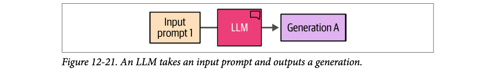
How to read this figure. The simplest picture: a beige prompt box, the pink LLM, a purple generation box. The next two figures add a judge and a feedback arrow to this.
We can ask a person, a preference evaluator, to rate the quality of that generation. Say they give it a score of 4:
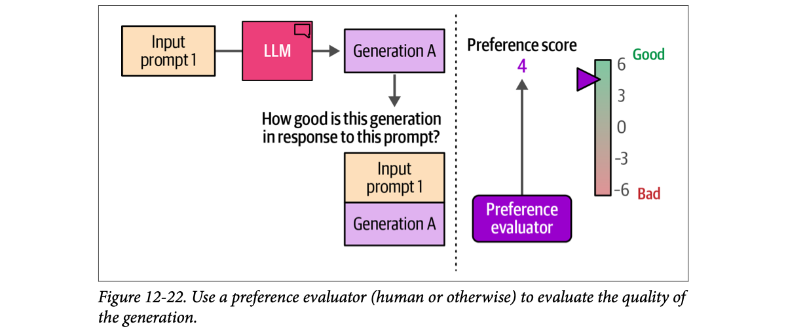
How to read this figure. Left: the prompt and its generation are bundled together, because quality only makes sense "in response to this prompt". Right: the purple preference evaluator outputs a preference score, here 4, on a scale from −6 (Bad, red) to 6 (Good, green). The caption says the evaluator can be "human or otherwise".
A preference tuning step then updates the model based on that score:
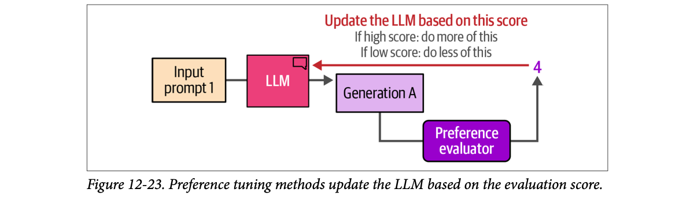
How to read this figure. The loop is closed: the score 4 flows back along the red arrow into the LLM. "If high score: do more of this. If low score: do less of this." This feedback loop is the heart of RLHF (reinforcement learning from human feedback).
As always, we need many training examples. Can the preference evaluation be automated? Yes: by training a different model, a reward model.
Pick a score for each generation and watch how the (modelled) probability of producing that kind of answer moves.
A chai stall owner trying new recipes: each customer rates the cup; recipes rated highly get made more often, low ones get dropped. Where it breaks: the owner can't ask every customer; similarly we can't ask humans to score millions of generations, which is why the next plate trains a reward model to stand in for them.
The score acts as a reward in reinforcement learning: the model's parameters are nudged to raise the probability of high-reward generations and lower that of low-reward ones. Unlike SFT, there is no single "correct" answer to copy; there is only a judgement of how good an answer was.
"Why isn't SFT enough?" "SFT teaches imitation of demonstrations, but it can't express 'this answer is better than that one', and good demonstrations are expensive to write. Preference tuning only needs judgements, which are easier to collect, and it directly optimises for what people prefer, including refusing unsafe requests politely."
To automate preference evaluation, we add a step before preference tuning: train a reward model.
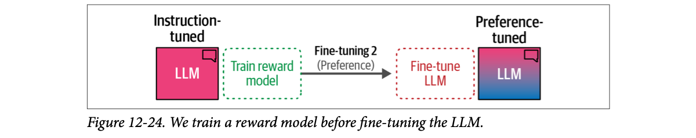
How to read this figure. Fine-tuning 2 now has two dashed sub-steps: first train reward model (green), then fine-tune LLM (red). Start: the instruction-tuned LLM from SFT. End: the preference-tuned LLM.
To create a reward model, take a copy of the instruction-tuned model and change it slightly so that, instead of generating text, it outputs a single score:
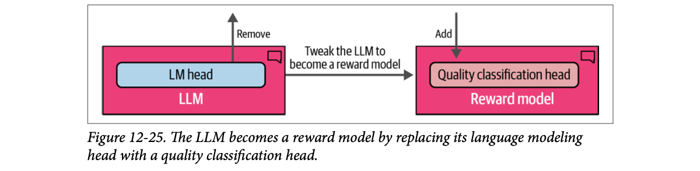
How to read this figure. Left: the LLM with its LM head (language modeling head, which outputs next-token probabilities over the vocabulary), with an arrow "Remove". Right: the same body with a new quality classification head ("Add"). The body is unchanged; only the last layer changes, from "which word next?" to "how good is this?".
A retired cricketer becomes a commentator. Same knowledge of the game (the model body), but instead of playing shots (generating text) they now give ratings of other people's shots (one score). Where it breaks: a commentator's judgement comes from experience; the reward model's judgement only comes from the preference data it is trained on next.
The LM head maps the final hidden state to vocabulary-sized logits. The new head maps the hidden state of the last token to one number, a regression/classification head like the classification heads in Ch.4 and Ch.11. Starting from the instruction-tuned model means the reward model already understands language and instructions; it only has to learn what "good" means.
"What is a reward model?" "Usually the same pretrained or SFT LLM with its language-modeling head replaced by a scalar head. It reads a prompt and a response and outputs a quality score. It is trained on human preference pairs and then stands in for humans to score millions of generations during RL."
We give the reward model a prompt and a generation, and it outputs a single number indicating the preference/quality of that generation in response to that prompt.
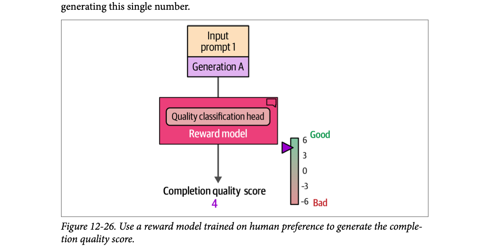
How to read this figure. It's Figure 12-22 with the human evaluator replaced by the pink reward model. Prompt and generation go in together; out comes a completion quality score (4) on the same −6 to 6 scale.
A UPI fraud score: transaction details in, one risk number out, in milliseconds, for every payment, because no human could look at each one. Where it breaks: fraud has ground truth later (chargebacks); answer quality has none, so the reward model's number is only as good as the human preferences behind it.
The prompt and generation are concatenated into one sequence; the model reads it with full context, and the head turns the final hidden state into a scalar. The scale has no fixed meaning; only differences between scores matter, which is exactly how it's trained next.
"What's the interface of a reward model?" "Input: the prompt and one candidate response, as a single sequence. Output: one scalar. Only relative values are meaningful, so you compare scores of responses to the same prompt rather than reading a score on its own. The same interface lets you use it for best-of-n reranking at inference too (beyond the book)."
The reward model can't be used straight away; it must first be trained to score generations properly. So we need a preference dataset.
A common shape: each training example has a prompt, one accepted generation and one rejected generation. Nuance: it isn't always good vs bad. Both generations can be good, with one just better than the other.
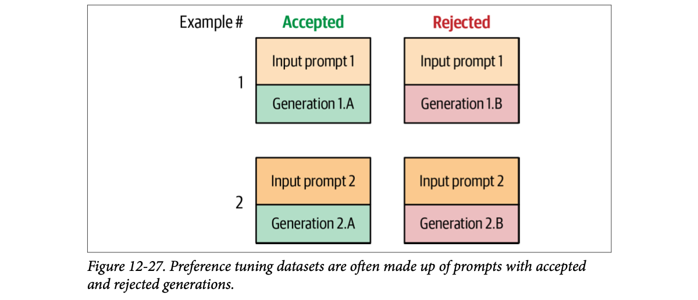
How to read this figure. Each row is one training example. Both columns share the same prompt (beige); the Accepted column has the preferred generation (green), the Rejected column the other one (red). Two examples are shown; real sets have thousands.
One way to generate preference data: give the LLM a prompt, have it produce two different generations, and ask human labelers which they prefer.
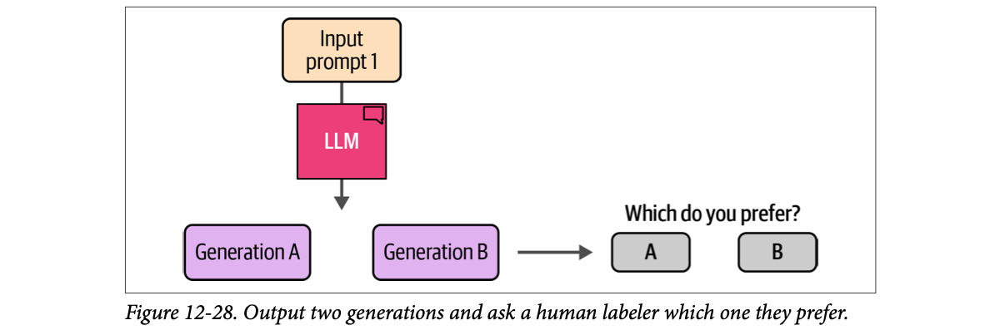
How to read this figure. One prompt, two samples from the same LLM (sampling gives different outputs), and a two-button question: "Which do you prefer? A / B". The click becomes the accepted/rejected label.
Illustrative prompts and answers (modelled). Your click builds the row a preference dataset would store.
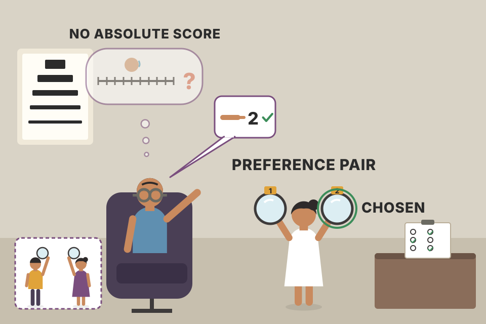
An eye test at the optician: "Is it clearer with lens one… or lens two?" Easy to answer, even when you couldn't say how clear on a scale of 1 to 10. Where it breaks: eyes are fairly consistent; human labelers disagree with each other a lot, so preference data is noisy.
Comparisons are more reliable than absolute ratings because each person's rating scale differs, while "A beats B" is relative. Generating both answers from the model being tuned keeps the data "on-distribution": the labels describe exactly the kind of outputs the model actually produces.
"How would you collect preference data for your product?" "Sample two responses per real prompt and have annotators, or an LLM judge with a rubric, pick the better one, with ties allowed and filtered out. In production you can also mine implicit feedback such as regenerations, thumbs up/down or edits, carefully, because those signals are biased."
argilla/distilabel-intel-orca-dpo-pairs) and its chosen/rejected columns.With the preference dataset, the reward model can be trained. A simple step: use the reward model to
The training objective is to make sure the accepted generation has a higher score than the rejected one.
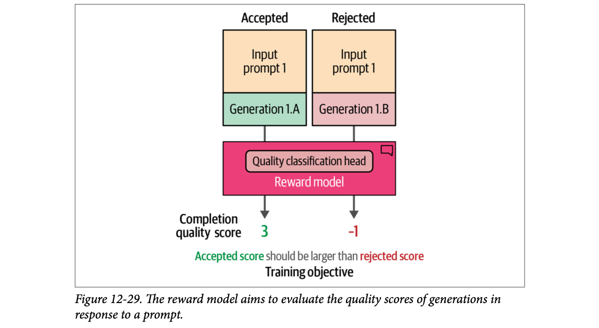
How to read this figure. Both halves of one training example go through the same reward model. It gives the accepted one 3 (green) and the rejected one −1 (red). The rule at the bottom, "Accepted score should be larger than rejected score", is the training objective: training pushes these two numbers apart in the right direction.
Beyond the book: the usual loss is −log σ(score_accepted − score_rejected) (Bradley–Terry). The book only states the objective "accepted > rejected".
Putting it all together gives the three stages of preference tuning:
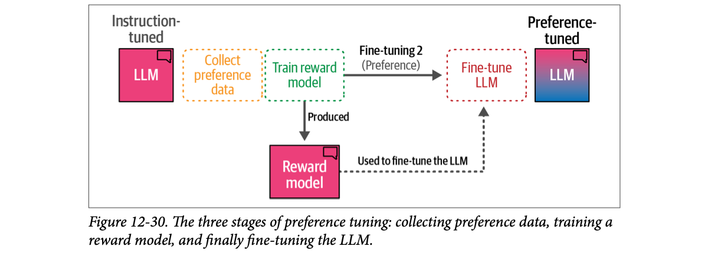
How to read this figure. Three dashed boxes in order: orange (collect data), green (train reward model), red (fine-tune LLM). Below, the produced reward model feeds back up (dotted arrow) into the fine-tune box: it is the scorer used during that final stage.
Reward models can be extended. Llama 2, for example, trains two reward models: one scores helpfulness, the other safety.
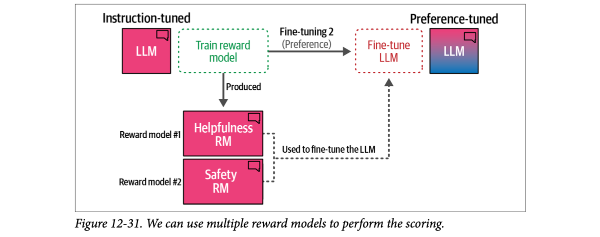
How to read this figure. Same as Figure 12-30, but the training step produces Reward model #1: Helpfulness RM and Reward model #2: Safety RM. Both dotted lines join and feed the fine-tuning step, so the LLM is tuned to be helpful and safe.
A common method to fine-tune the LLM with the trained reward model is Proximal Policy Optimization (PPO) (Schulman et al., 2017). PPO is a popular reinforcement learning technique that optimises the instruction-tuned LLM while making sure it does not deviate too much from the expected rewards. It was used to train the original ChatGPT, released in November 2022.
Steps 4–5 (the KL penalty and clipping) are beyond the book; the book's summary is "does not deviate too much".
A student (LLM) practises essays; a tutor (reward model) trained on what the examiners liked gives each essay a mark. The student adjusts after each mark, but the school rule says "don't change your style too drastically in one go" (PPO's "proximal" part). Llama 2's two reward models are two tutors: one for content, one for "nothing offensive". Where it breaks: a student can ask the tutor why; the LLM only gets a number.
The pairwise objective only cares about the gap between scores, so the reward model learns a consistent ranking. In PPO, the LLM (the "policy") generates answers, the reward model scores them, and the policy is updated to raise expected reward. Beyond the book: two guards keep it "proximal": a KL penalty that punishes drifting far from the SFT model, and clipping that limits how much one update can change the policy. Without them, the LLM learns to exploit the reward model's blind spots (Goodhart again).
Figure 12-29's numbers: accepted 3, rejected −1, gap 4. With the (beyond the book) Bradley–Terry loss, P(accepted preferred) = σ(4) ≈ 0.982 and loss ≈ 0.018: almost nothing to learn. If the model had them reversed (−1 vs 3), P ≈ 0.018 and loss ≈ 4.02: a big push to fix it.
"Explain RLHF." "Three stages: collect human comparisons of two responses per prompt; train a reward model, usually the SFT model with a scalar head, so the preferred response scores higher; then optimise the SFT model with PPO to maximise the reward while a KL penalty keeps it close to the SFT model. That was the original ChatGPT recipe. Llama 2 used separate helpfulness and safety reward models."
A disadvantage of PPO: it's a complex method that must train at least two models, the reward model and the LLM, which can cost more than necessary.
Direct Preference Optimization (DPO) (Rafailov et al., 2023, "Your language model is secretly a reward model") is an alternative to PPO that drops the reinforcement-based learning procedure. Instead of a reward model judging generation quality, the LLM itself does it. A copy of the LLM serves as the reference model, and we judge the shift between the reference and the trainable model in the quality of the accepted and rejected generations.
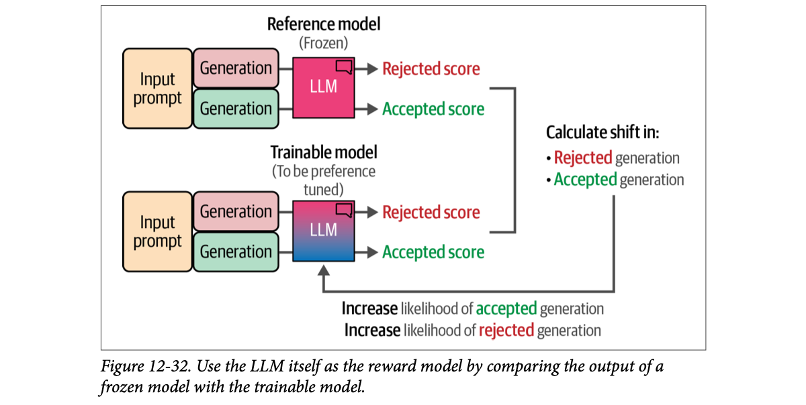
How to read this figure. The same prompt with its rejected (red) and accepted (green) generation goes into two copies of the model. The top one, the reference model, is frozen. The bottom one, the trainable model (pink-to-blue), is being preference-tuned. Each gives a rejected score and an accepted score. On the right, "Calculate shift in" both, and the result flows back into the trainable model. Careful: the figure's last line says "Increase likelihood of rejected generation", but the book's text says the model should become less confident of rejected generations. The text is right (and so is DPO): it should decrease the likelihood of the rejected one. Treat the figure's wording as a typo.
By calculating this shift during training, we can optimise the likelihood of accepted generations over rejected ones by tracking the difference between the reference model and the trainable model.
To calculate the shift and its scores, the log probabilities of the rejected and accepted generations are extracted from both models. This happens at the token level: the per-token probabilities are combined to compute the shift between reference and trainable models.
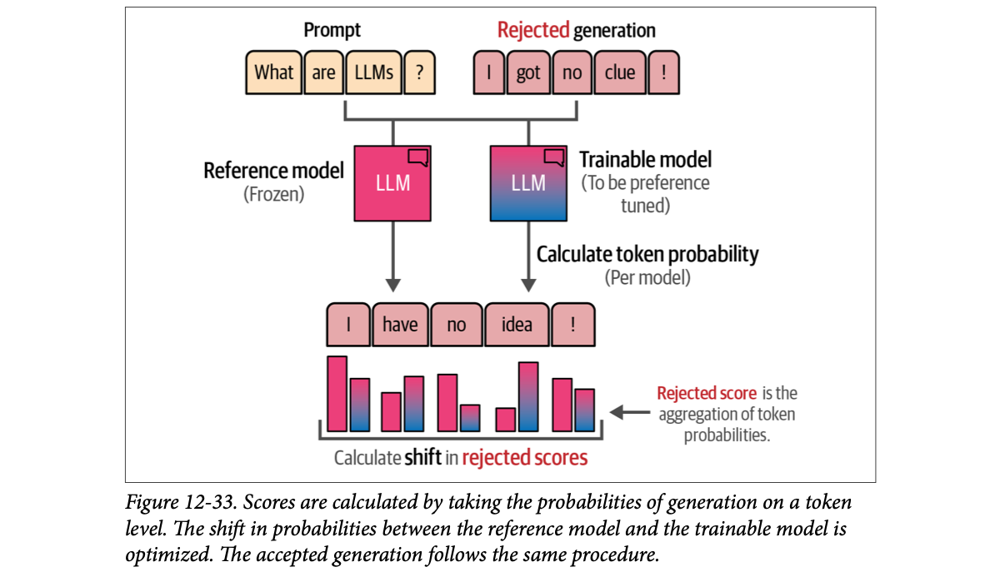
How to read this figure. Prompt tokens "What / are / LLMs / ?" plus a rejected generation go into both models. Each model computes the probability of every generation token (pairs of bars: pink = reference, gradient = trainable). The "rejected score" is the aggregation of those token probabilities, and DPO looks at the shift between the two models' scores. Same for the accepted generation. Small inconsistency: the rejected generation is written "I got no clue !" at the top but the scored tokens read "I have no idea !"; it's the same idea, just two wordings.
Using these scores, the trainable model's parameters are optimised to be more confident generating the accepted generations and less confident generating the rejected ones. Compared to PPO, the DPO authors found it more stable during training and more accurate. Because of its stability, the book uses DPO as its primary preference tuning method.
Enter the summed log-probabilities (sum over tokens) for each generation under each model. Beyond the book: the DPO loss formula.
Modelled probabilities. As training progresses the trainable model's bars shrink for the rejected answer and grow for the accepted one, while the frozen reference stays put.
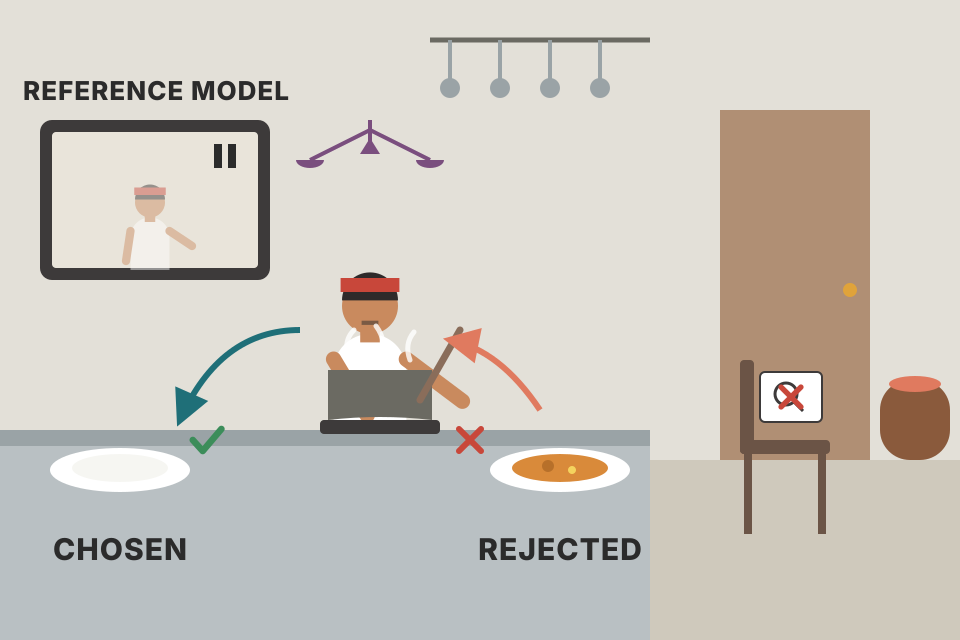
Instead of hiring a separate food critic (reward model), the cook compares today's cooking with a video of how they cooked yesterday (frozen reference): "Am I now more likely to make the dish customers chose, and less likely to make the one they sent back, than I was yesterday?" Where it breaks: a cook can taste; DPO never actually scores quality, it only shifts probabilities of the specific answers in the dataset, so it's limited to the data you collected.
Beyond the book: the DPO paper shows that the RLHF objective (maximise reward, stay close to the reference with a KL penalty) has a closed-form optimum, and that the implied reward of an answer is β · (log π_trainable(y|x) − log π_ref(y|x)). Plug that into the pairwise reward-model loss and you get a loss on the LLM directly: −log σ(β·[(logπ(acc) − logπref(acc)) − (logπ(rej) − logπref(rej))]). That's the "shift" the book describes. β controls how far from the reference the model may move. No sampling, no separate reward model, just a classification-style loss over the dataset: hence more stable.
Defaults in the calculator: both models start identical, so the margin is 0 and loss = −log σ(0) = log 2 ≈ 0.693. After some training: trainable accepted −11 (up 1), trainable rejected −13 (down 3). Margin = (−11 + 12) − (−13 + 10) = 1 + 3 = 4; × β 0.1 = 0.4; loss = −log σ(0.4) ≈ 0.513. Loss falls as the model favours the accepted answer relative to the reference.
"DPO vs PPO?" "PPO-based RLHF trains a reward model and then runs online RL with sampling, a value model and a KL penalty: powerful but complex and unstable. DPO derives a loss directly on preference pairs using the policy and a frozen reference model's log-probabilities; no reward model, no sampling loop, and it's basically supervised training. It's cheaper and more stable, which is why most open models use DPO-style methods, although online RL can still win when you have a good reward signal."
With the Hugging Face stack, preference tuning is "eerily similar" to the instruction tuning above, with a few small differences. They still use TinyLlama, but now an instruction-tuned version that was first trained with full fine-tuning and then further aligned with DPO. Compared to their own instruction-tuned model, this LLM was trained on much larger datasets.
The section shows how to further align this model using DPO with reward-based datasets.
Unsure: the prose says they start from TinyLlama's own chat model, but the code in plate 30 loads "TinyLlama-1.1B-qlora", the adapter they trained in plate 14, on top of the base checkpoint. This page follows the code: DPO is applied to the authors' own SFT model.
| Step | SFT (plates 10–15) | DPO (plates 29–32) |
|---|---|---|
| Data | UltraChat, text column | Orca DPO pairs, prompt/chosen/rejected |
| Model load | base TinyLlama in 4-bit | SFT model (base + QLoRA adapter merged) in 4-bit |
| LoRA config | r 64, alpha 32, 7 modules | same |
| Config class | TrainingArguments | DPOConfig |
| Learning rate | 2e-4 | 1e-5 |
| Length | 1 epoch | 200 steps, warmup 10% |
| Trainer | SFTTrainer | DPOTrainer with beta=0.1 |
Same kitchen, same equipment, a different lesson: last week the cook learned to make the dishes; this week they learn which version customers prefer. Where it breaks: the cook might forget last week's lessons if pushed too hard; that's why DPO uses a tiny learning rate and a reference model.
DPO is "just" supervised training on pairs, so it plugs into the same Trainer machinery: quantized model, LoRA adapter, paged optimizer. The only new pieces are the paired data format and the DPO loss in DPOTrainer.
The dataset has, for each prompt, an accepted generation and a rejected generation. It was partly generated by ChatGPT, with scores deciding which output is accepted and which rejected.
from datasets import load_dataset
def format_prompt(example):
"""Format the prompt to using the <|user|> template TinyLLama is using"""
# Format answers
system = "<|system|>\n" + example["system"] + "</s>\n"
prompt = "<|user|>\n" + example["input"] + "</s>\n<|assistant|>\n"
chosen = example["chosen"] + "</s>\n"
rejected = example["rejected"] + "</s>\n"
return {
"prompt": system + prompt,
"chosen": chosen,
"rejected": rejected,
}
# Apply formatting to the dataset and select relatively short answers
dpo_dataset = load_dataset(
"argilla/distilabel-intel-orca-dpo-pairs", split="train"
)
dpo_dataset = dpo_dataset.filter(
lambda r:
r["status"] != "tie" and
r["chosen_score"] >= 8 and
not r["in_gsm8k_train"]
)
dpo_dataset = dpo_dataset.map(
format_prompt, remove_columns=dpo_dataset.column_names
)
dpo_datasetapply_chat_template) and adds a <|system|> turn holding the dataset's system message.prompt ends with <|assistant|>\n, the point where the model should start answering. chosen and rejected are just the two answers, each ending with </s>. These three column names are what DPOTrainer expects.argilla/distilabel-intel-orca-dpo-pairs.status != "tie" (the two answers weren't judged equal), chosen_score >= 8 (the chosen answer is genuinely good), and not in_gsm8k_train (drop questions from the GSM8k training set, which avoids contaminating that benchmark).map(..., remove_columns=...) keeps only the three new columns.The filtering cuts the data to roughly 6,000 examples from the original 13,000.
Sample rows are made up (modelled) to show how each condition works.
Sorting mangoes at a mandi: throw out pairs where you can't tell which is better (ties), keep only pairs where the better mango is really good (score ≥ 8), and set aside mangoes earmarked for the judging competition (GSM8k) so nobody can say you practised on them. Where it breaks: mangoes don't get worse with less data; models can, so filtering trades quantity for quality.
Ties carry no preference signal. Low "chosen" scores mean the model would learn to prefer one bad answer over another. And removing GSM8k overlap keeps later benchmark numbers honest. The system turn lets the data steer behaviour like "You are a helpful assistant".
"How do you clean preference data?" "Drop ties and near-ties, require the chosen answer to pass a quality bar, de-duplicate, remove overlaps with eval or benchmark sets, and balance lengths so the model doesn't just learn 'longer is better'. Then spot-check a sample by hand."
Load the base model with the LoRA trained earlier. As before, quantize it to reduce the VRAM needed for training:
from peft import AutoPeftModelForCausalLM
from transformers import BitsAndBytesConfig, AutoTokenizer
# 4-bit quantization configuration - Q in QLoRA
bnb_config = BitsAndBytesConfig(
load_in_4bit=True, # Use 4-bit precision model loading
bnb_4bit_quant_type="nf4", # Quantization type
bnb_4bit_compute_dtype="float16", # Compute dtype
bnb_4bit_use_double_quant=True, # Apply nested quantization
)
# Merge LoRA and base model
model = AutoPeftModelForCausalLM.from_pretrained(
"TinyLlama-1.1B-qlora",
low_cpu_mem_usage=True,
device_map="auto",
quantization_config=bnb_config,
)
merged_model = model.merge_and_unload()
# Load LLaMA tokenizer
model_name = "TinyLlama/TinyLlama-1.1B-intermediate-step-1431k-3T"
tokenizer = AutoTokenizer.from_pretrained(model_name, trust_remote_code=True)
tokenizer.pad_token = "<PAD>"
tokenizer.padding_side = "left"Then the same LoRA configuration as before is used for DPO training:
from peft import LoraConfig, prepare_model_for_kbit_training, get_peft_model
# Prepare LoRA configuration
peft_config = LoraConfig(
lora_alpha=32, # LoRA Scaling
lora_dropout=0.1, # Dropout for LoRA Layers
r=64, # Rank
bias="none",
task_type="CAUSAL_LM",
target_modules= # Layers to target
["k_proj", "gate_proj", "v_proj", "up_proj", "q_proj", "o_proj",
"down_proj"]
)
# prepare model for training
model = prepare_model_for_kbit_training(model)
model = get_peft_model(model, peft_config)bnb_config as plate 11.AutoPeftModelForCausalLM.from_pretrained("TinyLlama-1.1B-qlora", quantization_config=bnb_config) loads the base in 4-bit and attaches the SFT adapter; merge_and_unload() folds it in, giving merged_model, our SFT model.Unsure / possible book slip: the last two lines pass model (the un-merged PEFT model) to prepare_model_for_kbit_training rather than merged_model. Also, merging an adapter into 4-bit weights is lossy (beyond the book). Plate 32's final merge is done in 16-bit, which avoids that for the final model. This page reproduces the book's code as printed.
Stacking lessons: the cook's notebook from week one is copied into the recipe (merge), and a fresh blank notebook (new LoRA) is opened for week two's lesson. Where it breaks: copying into a compressed flat-pack recipe (4-bit) loses a little detail.
DPO needs a reference model and a trainable model. With a PEFT model, DPOTrainer can use the same network for both (beyond the book): with the new adapter switched off it is the reference (the SFT model), with the adapter on it is the trainable model. So you don't need two copies in GPU memory.
"DPO needs a reference model. Doesn't that double GPU memory?" "Not with LoRA: the reference is just the same base with the adapter disabled, so one copy of the weights serves both. Without PEFT you either keep two full models or precompute the reference log-probabilities once over the dataset before training."
For simplicity, the same training arguments are used with one difference: instead of a full epoch (which can take up to two hours), they run 200 steps for illustration. They also add warmup_ratio, which raises the learning rate from 0 to the set learning_rate over the first 10% of steps. Keeping the learning rate small at the start (the warmup period) lets the model adjust to the data before larger learning rates apply, avoiding harmful divergence.
from trl import DPOConfig
output_dir = "./results"
# Training arguments
training_arguments = DPOConfig(
output_dir=output_dir,
per_device_train_batch_size=2,
gradient_accumulation_steps=4,
optim="paged_adamw_32bit",
learning_rate=1e-5,
lr_scheduler_type="cosine",
max_steps=200,
logging_steps=10,
fp16=True,
gradient_checkpointing=True,
warmup_ratio=0.1
)DPOConfig (from trl) extends TrainingArguments with DPO-specific options.learning_rate=1e-5: 20× smaller than SFT's 2e-4. (The book's text says "one difference", but the code also changes the learning rate, and replaces num_train_epochs with max_steps.)max_steps=200, warmup_ratio=0.1 → 20 warmup steps.200 steps × effective batch 8 = 1,600 preference pairs seen, out of ~6,000 after filtering, so about 27% of one epoch. Warmup: steps 0–20 go linearly 0 → 1e-5, then cosine decay to ~0 at step 200. Use the schedule widget in plate 13 with warmup 10% and peak 1e-5 to see the shape.
Fine adjustments need a fine screwdriver: SFT moved the model a lot (bigger learning rate), DPO only adjusts preferences on an already good model, so it uses a small one and eases in with warmup. Where it breaks: unlike a screwdriver, too small a learning rate here just means nothing changes in 200 steps.
DPO's loss can be driven down quickly by lowering the rejected answers' probabilities in ways that hurt general ability. A small learning rate, short training and β (plate 32) all limit how far the model drifts from the SFT reference.
"Why a lower learning rate for DPO than SFT?" "DPO is a small correction on a model that already works; large steps quickly over-optimise the preference margin and degrade fluency. Typical DPO learning rates are around 1e-6 to 1e-5 with warmup, versus 1e-4 to 2e-4 for LoRA SFT."
With everything prepared, fine-tuning starts:
from trl import DPOTrainer
# Create DPO trainer
dpo_trainer = DPOTrainer(
model,
args=training_arguments,
train_dataset=dpo_dataset,
tokenizer=tokenizer,
peft_config=peft_config,
beta=0.1,
max_prompt_length=512,
max_length=512,
)
# Fine-tune model with DPO
dpo_trainer.train()
# Save adapter
dpo_trainer.model.save_pretrained("TinyLlama-1.1B-dpo-qlora")beta=0.1: the DPO β from plate 27; it controls how strongly the model may move away from the reference (beyond the book: smaller β = allowed to drift further).max_prompt_length=512 and max_length=512 cap the prompt and the full prompt+answer at 512 tokens.TinyLlama-1.1B-dpo-qlora.To merge both adapters, they are merged iteratively into the base model:
from peft import PeftModel
# Merge LoRA and base model
model = AutoPeftModelForCausalLM.from_pretrained(
"TinyLlama-1.1B-qlora",
low_cpu_mem_usage=True,
device_map="auto",
)
sft_model = model.merge_and_unload()
# Merge DPO LoRA and SFT model
dpo_model = PeftModel.from_pretrained(
sft_model,
"TinyLlama-1.1B-dpo-qlora",
device_map="auto",
)
dpo_model = dpo_model.merge_and_unload()This SFT + DPO combination is a great way to first fine-tune the model for basic chatting and then align its answers with human preference. But it comes at a cost: two training loops, and potentially tuning parameters in two processes.
Since DPO, new preference-alignment methods have appeared. Of note is Odds Ratio Preference Optimization (ORPO) (Hong, Lee & Thorne, 2024), which combines SFT and DPO into a single training process. It removes the need for two separate training loops, simplifying training further, while still allowing QLoRA.
Two-step: first a driving school teaches you to drive, then a defensive-driving course teaches you which habits are safer. ORPO is one combined course that teaches driving while marking unsafe habits from day one. Where it breaks: a combined course can be harder to tune; if one part goes wrong you can't redo just that part.
Each adapter is a weight delta. Merging the SFT delta gives W₁ = W₀ + ΔSFT; loading the DPO adapter on W₁ and merging gives W₂ = W₁ + ΔDPO. Order matters because ΔDPO was learned on top of W₁. Beyond the book: ORPO adds to the normal SFT loss on the chosen answer a penalty based on the odds ratio between chosen and rejected answers, so no reference model is needed (the paper title: "without reference model").
Run count for the book's pipeline: SFT loop (~1 hour on a T4 for 3,000 examples) + DPO loop (200 steps; a full epoch would be up to 2 hours). ORPO would replace both with one loop over preference data (time depends on data; modelled).
"Walk me through fine-tuning an open model for a product." "Pick a base or chat model; build instruction data in its chat template; QLoRA SFT with r around 16–64 on all linear layers; evaluate on a held-out task set and side-by-side samples; then collect preference pairs, from labelers or an LLM judge, and run DPO with a low learning rate and β around 0.1 on top of the SFT model; merge adapters in 16-bit and serve. If two loops are too costly, ORPO does both in one."
| Term | Meaning in this chapter |
|---|---|
| Base / pretrained / foundation model | Output of language modeling; completes text, doesn't follow instructions. |
| Language modeling | Self-supervised next-token prediction on massive unlabeled text. |
| SFT (supervised fine-tuning) | Next-token training on labeled input→response data; base → instruction model. |
| Instruction tuning | SFT with instruction data so the model follows instructions. |
| Preference tuning / alignment | Fine-tuning on preference data so outputs match human preference and safety. |
| Full fine-tuning | Updating all parameters with a smaller labeled dataset. |
| PEFT | Parameter-efficient fine-tuning: train a small set of parameters. |
| Adapter | Small trainable modules after attention and feedforward in every block; swappable per task. |
| LoRA | Low-rank adaptation: learn a weight update as the product of two thin matrices; base frozen. |
| Rank (r) | Thin dimension of LoRA matrices; typical 4–64. |
| lora_alpha | How much the LoRA change is weighted vs original weights (rule of thumb 2×r). |
| Intrinsic dimension | LMs' fine-tuning changes live in a low-dimensional space, which is why low ranks work. |
| Quantization | Representing weights with fewer bits. |
| Blockwise quantization | Quantize blocks of weights separately so similar weights stay distinct. |
| NF4 | 4-bit normalized float: levels matched to the normal distribution of weights. |
| QLoRA | LoRA on a 4-bit quantized base model (plus double quantization, paged optimizers). |
| Chat template | Fixed layout with <|user|>, <|assistant|>, </s> separating turns. |
| Merge (merge_and_unload) | Fold adapter weights into the base weights. |
| Perplexity | How well a model predicts a text; low = not "perplexed". |
| Benchmark / leaderboard | Public task sets / rankings over several benchmarks. |
| LLM-as-a-judge | A separate LLM rates outputs; pairwise variant picks the better of two. |
| Chatbot Arena / Elo | Blind human pairwise votes turned into relative skill ratings. |
| Goodhart's law | When a measure becomes a target, it ceases to be a good measure. |
| Reward model | LLM copy with a quality head that scores prompt+generation. |
| RLHF | Reinforcement learning from human feedback: reward model + RL (PPO). |
| PPO | Proximal Policy Optimization: RL that updates the LLM without deviating too much. |
| DPO | Direct Preference Optimization: no reward model; compare trainable vs frozen reference log-probs. |
| Reference model | Frozen copy of the LLM used by DPO. |
| Warmup | Raise learning rate from 0 over the first steps to avoid divergence. |
| ORPO | Odds Ratio Preference Optimization: SFT and preference tuning in one training process. |
apply_chat_template), TrainingArguments, pipeline.load_dataset, shuffle, select, filter, map for UltraChat and Orca DPO pairs.BitsAndBytesConfig; paged optimizers.LoraConfig, get_peft_model, prepare_model_for_kbit_training, AutoPeftModelForCausalLM, PeftModel, merge_and_unload.SFTTrainer, DPOConfig, DPOTrainer. Beyond the book: also PPO, ORPO and other trainers.intermediate-step-1431k-3T and a chat version (SFT + DPO).HuggingFaceH4/ultrachat_200k) for SFT.Language modeling (pretraining) on massive unlabeled text, self-supervised; supervised fine-tuning on labeled instruction–response data; preference tuning on preference data (prompt with accepted/rejected generations).
It was only trained to predict the next words; it completes the text, and a list of quiz questions is a likely continuation. It was never trained to follow instructions (Figure 12-5).
Costly to train, slow training times, significant storage.
After the attention layer and after the feedforward network, in every block. Fine-tuning 3.6% of BERT's parameters came within 0.4% of full fine-tuning on GLUE.
20 and 40 (vs 100). Rank 8: 2 × 12,288 × 8 = 196,608 ≈ 197K, vs ~150M.
Weights close to each other would land in the same level and be reconstructed as identical, losing their differences (Figure 12-16); outliers would also stretch the range. QLoRA fixes this with blockwise and distribution-aware (NF4) quantization.
r: rank of the low-rank matrices (more = less compression, more power; typical 4–64). lora_alpha: how much change is added to the original weights (rule of thumb 2×r). target_modules: which layers get LoRA; fewer = faster but lower performance.
Remove quantization_config when loading the model and skip creating/passing peft_config.
To combine the trained LoRA weights with full-precision original weights, rather than with lossy 4-bit ones, giving an accurate merged model.
Perplexity ignores consistency, fluency, creativity and correctness. Benchmarks: models can overfit to them; they're broad and may not cover your use case; some need strong GPUs for hours.
Users compare two anonymous models' answers and vote; 800k+ votes are turned into Elo-style ratings based on win rates. Limitation: aggregated crowd opinion may not match your use case.
"When a measure becomes a target, it ceases to be a good measure." Optimising only for grammatical correctness could make a model output only "This is a sentence."
Copy the instruction-tuned LLM, replace the LM head with a quality classification head that outputs one score. Train on prompts with accepted/rejected generations so the accepted one scores higher.
PPO needs at least two trained models (reward model + LLM) and is complex. DPO uses a frozen copy of the LLM as reference and directly raises the likelihood of accepted vs rejected generations; its authors found it more stable and more accurate.
ORPO, which combines SFT and preference optimisation in one training process (also works with QLoRA). Also check whether a good existing chat model plus a single QLoRA SFT on your data is enough.
Also mentioned: a download link for specialised adapters (oreil.ly/XraXg), Sebastian Raschka's Ahead of AI newsletter on LoRA tips, a visual guide to quantization blog post, and the Open LLM Leaderboard.